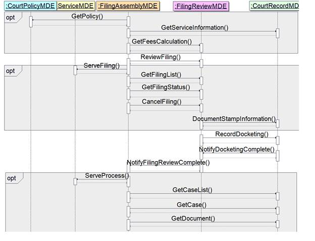
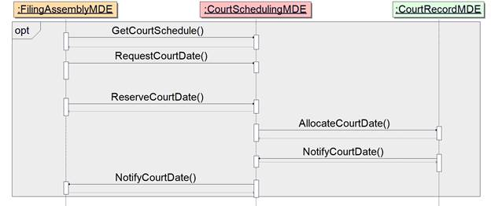

This document is a specification developed by the OASIS
LegalXML Electronic Court Filing Technical Committee. It defines a technical
architecture and a set of components, operations and message structures for an
electronic court filing system, and sets forth rules governing its
implementation.
The ECF 5.0 architecture includes principal groups of
specifications:
·
Core Specification – This core specification defines the Major
Design Elements (MDEs) and the operations and messages that are exchanged
between MDEs.
·
Service Interaction Profiles – Service interaction profiles
are specifications that describe communication infrastructures that deliver
messages between MDEs.
·
Document Signature Profiles – Document signature profiles
are specifications that describe mechanisms for signing electronic documents.
In order to be conformant, an implementation of the ECF
specification MUST implement the core specification and at least one service
interaction profile and one document signature profile.
The MDEs and operations that make up the core specification
are discussed in Service Model. The messages are
defined in Messages. Service interaction profiles are
discussed in Service Interaction Profiles.
Document signature profiles are discussed in Document Signature Profiles.
This Committee Specification Public Review Draft is provided
under the RF
on Limited Terms Mode of the OASIS IPR Policy,
the mode chosen when the Technical Committee was established. For information
on whether any patents have been disclosed that may be essential to
implementing this specification, and any offers of patent licensing terms,
please refer to the Intellectual Property Rights section of the TC’s web page (https://www.oasis-open.org/committees/legalxml-courtfiling/ipr.php).
The key words “MUST”, “MUST NOT”, “REQUIRED”, “SHALL”, “SHALL
NOT”, “SHOULD”, “SHOULD NOT”, “RECOMMENDED”, “MAY”, and “OPTIONAL” in this
document are to be interpreted as described in [RFC2119].
This section defines key terms used in this specification.
Attachment
See definition in Attachment.
Callback message
A message transmission returned by some operations some
time after the operation was invoked (asynchronously).
Document
An electronic equivalent of a document that would otherwise
be filed on paper in a traditional, non-electronic fashion.
Document hash
A condensed representation of a document intended to
protect document integrity, calculated according to the FIPS 180-4 SHA 256
algorithm.
Docketing
The process invoked when a court receives a pleading, order
or notice, with no errors in transmission or in presentation of required
content, and records it as a part of the official record.
File format
A file representation of a document (e.g. PDF).
Filer
An attorney, judicial official or a pro se (self-represented)
litigant who electronically provides filings (combinations of data and
documents) for acceptance and filing by a court, or who has successfully filed filings
with a court.
Filing
An electronic submission (with any associated data, one or
many lead and connected documents, and the like) that has been assembled for
the purpose of being filed, either into a specified court case, or to initiate
a new court case.
Filing Identifier
A unique value assigned as a tracking identifier for a
‘Filing’ (e.g. an e-filing submission). The filing identifier is carried by
messages that are involved in an e-filing transaction that begins with the
submittal of a filing:ReviewFiling message,
and culminates with the final NotifyFilingReviewComplete operation call for the
original filing:ReviewFiling
message. Upon receipt of the final reviewfilingcallback:NotifyFilingReviewCompleteMessage
by the originating FilingAssembly MDE, all filing lead and connected
documents in the original filing:ReviewFiling message will have been reviewed
and dispositioned (e.g. accepted and docketed, or rejected, etc.) or the filing
will have been cancelled. Even after the conclusion of the e-filing episode,
the filing identifier continues to be useful for GetFilingStatus requests.
Hub Service MDE
A centralized Service MDE capable of receiving a single set
of service notifications for all parties registered for electronic service in a
case and transmitting the service notifications to the Service MDEs registered
to each party in the case.
Major Design Element (MDE)
A logical grouping of operations representing a significant
business process supported by ECF 5.0. Each MDE operation receives one or more
messages, returning a synchronous response message (a reaction to a message
received) and returning an OPTIONAL asynchronous (later) response message to
the originating message sender. An MDE in ECF is comparable to a UML
“Component”, “Port” or “Class” with the “implementationClass” stereotype.
Message
See definition in Messages. A
Message in ECF is comparable to a UML “Parameter” or “Class” with the “Type”
stereotype.
Message Identifier
A unique value assigned to a message, either as a unique
reference to the message, or as a correlation value to reference a prior
message.
Message Transmission
The sending of one or more messages and associated
attachments to an MDE. Each transmission must invoke or respond to an
operation on the receiving MDE, as defined in the ECF 5.0 specification.
Operation (or MDE
Operation)
A function provided by an MDE upon receipt of one or more
messages. The function provided by the operation represents a significant step
in the court filing business process. A sender invokes an operation on an MDE
by transmitting a request with an operation identifier and a set of messages.
An Operation in ECF is comparable to a UML “Operation”.
Operation signature
A definition of the input message and synchronous response
message associated with an operation. Each message is given a name and a type
by the operation. The type is defined by a single one of the message
structures defined in the ECF 5.0 specification.
Party
A litigant in a case. A party MAY be a person, organization
or property (e.g. “in rem” property).
Participant
An entity (person, organization or thing) that plays some
role in the context of an e-filing submission. Participants include parties,
attorneys, clerks, judicial officials, other entities receiving service, etc.
Submitter
The person or organization that
tenders an ECF message to an operation hosted by a MDE. In the case of a
filing, the submitter MAY or MAY NOT be the filing attorney or party.
Synchronous response
A message transmission returned immediately (synchronously)
as the result of an operation. Every operation has a synchronous response.
Transaction Identifier
A unique value that identifies a set of messages which
collectively belong to or relate to a single purpose, episode, or outcome.
Filing Identifier is an example of a specific type of transaction identifier. A
transaction identifier MAY also be used to relate messages collectively
involved in the ‘Scheduling Process’, such as requestdaterequest:RequestCourtDateRequestMessage,
requestdateresponse:RequestDateResponseMessage, reservedate:ReserveCourtDateMessage, datecallback:NotifyCourtDateMessage,
and allocatedate:AllocateCourtDateMessage.
This section defines key symbols and abbreviations used in
this specification.
BIEC
Business Information Exchange Components
ECF 5.0
Electronic Court Filing 5.0
IEPD
Information Exchange Package Documentation
MDE
Major Design Element
MPD
Model Package Description
NIEM
National Information Exchange Model
OASIS
Organization for the Advancement of Structured Information
Standards
XML
eXtensible Markup Language
W3C
World Wide Web Consortium
WS-I
Web Services Interoperability Organization
[FIPS 180-4] Secure Hash Standard,
August 2015, National Institute for Standards and Technology, https://nvlpubs.nist.gov/nistpubs/FIPS/NIST.FIPS.180-4.pdf
[Genericode] Code List Representation
(Genericode) 1.0, Anthony B. Coates, Miley Watts, 28 December 2007, OASIS
Committee Specification, http://docs.oasis-open.org/codelist/genericode/doc/oasis-code-list-representation-genericode.html
[IANA Media Types]
Media Types, 1 May 2017, Internet Assigned Numbers Authority (IANA), http://www.iana.org/assignments/media-types/media-types.xhtml.
[NIEM] National
Information Exchange Model 4.1, 2018, NIEM
Business Architecture Committee, http://niem.gov.
[NIEM Code Lists] NIEM Code Lists Specification 4.0, 7 November 2017, NIEM
Technical Architecture Committee, https://reference.niem.gov/niem/specification/code-lists/4.0/niem-code-lists-4.0.html.
[NIEM Conformance]
NIEM Conformance Specification, 15 August 2014, NIEM Technical
Architecture Committee, https://reference.niem.gov/niem/specification/conformance/3.0/conformance-3.0.html
[NIEM MPD] NIEM Model Package Description 3.0.1, 27 April 2015, NIEM Technical
Architecture Committee, https://reference.niem.gov/niem/specification/model-package-description/3.0.1/model-package-description-3.0.1.html
[NIEM NDR] NIEM Naming and Design Rules 4.0, 7 November 2017, NIEM Technical Architecture
Committee, https://reference.niem.gov/niem/specification/naming-and-design-rules/4.0/niem-ndr-4.0.html.
[RFC2046] Freed, N. and N.
Borenstein, “Multipurpose Internet Mail Extensions (MIME) Part Two: Media
Types”, RFC 2046, DOI 10.17487/RFC2046, November 1996, http://www.rfc-editor.org/info/rfc2046.
[RFC2119] Bradner, S.,
“Key words for use in RFCs to Indicate Requirement Levels”, BCP 14, RFC 2119,
DOI 10.17487/RFC2119, March 1997, http://www.rfc-editor.org/info/rfc2119.
[RFC4122] Leach, P., Mealling,
M., and R. Salz, “A Universally Unique Identifier (UUID) URN Namespace”, RFC
4122, DOI 10.17487/RFC4122, July 2005, http://www.rfc-editor.org/info/rfc4122.
[RFC5545]
Desruisseaux, B., Ed., “Internet Calendaring and Scheduling Core
Object Specification (iCalendar)”, RFC 5545, DOI 10.17487/RFC5545, September
2009, http://www.rfc-editor.org/info/rfc5545.
[WS-Calendar] WS-Calendar 1.0, T. Considine,
M. Douglass, 30 July 2011, http://docs.oasis-open.org/ws-calendar/ws-calendar-spec/v1.0/cs01/ws-calendar-spec-v1.0-cs01.html
[xCal] C. Daboo, M
Douglass, S Lees xCal: The XML format for iCalendar, http://tools.ietf.org/html/draft-daboo-et-al-icalendar-in-xml-08,
IETF Internet-Draft, April 2011.
[XML] Extensible Markup Language
(XML) 1.0 (Fifth Edition), T. Bray, J. Paoli, M. Sperberg-McQueen, E.
Maler, F. Yergeau, Editors, W3C Recommendation, November 26, 2008, http://www.w3.org/TR/2008/REC-xml-20081126/.
Latest version available at http://www.w3.org/TR/xml.
[XMLENC-CORE1]
XML Encryption
Syntax and Processing Version 1.1, D. Eastlake, J. Reagle, F. Hirsch, T.
Roessler, Editors, W3C Recommendation, April 11, 2013, http://www.w3.org/TR/2013/REC-xmlenc-core1-20130411/.
Latest version available at http://www.w3.org/TR/xmlenc-core1/.
[XMLDSIG-CORE]
XML Signature
Syntax and Processing (Second Edition), D. Eastlake, J. Reagle, D. Solo, F.
Hirsch, T. Roessler, Editors, W3C Recommendation, June 10, 2008, http://www.w3.org/TR/2008/REC-xmldsig-core-20080610/.
Latest version available at http://www.w3.org/TR/xmldsig-core/.
[XML-NAMES] Namespaces in XML 1.0
(Third Edition), T. Bray, D. Hollander, A. Layman, R. Tobin, H. Thompson,
Editors, W3C Recommendation, December 8, 2009, http://www.w3.org/TR/2009/REC-xml-names-20091208/.
Latest version available at http://www.w3.org/TR/xml-names.
[XML-SCHEMA-1] XML Schema Part 1:
Structures Second Edition, H. Thompson, D. Beech, M. Maloney, N.
Mendelsohn, Editors, W3C Recommendation, October 28, 2004,
http://www.w3.org/TR/2004/REC-xmlschema-1-20041028/. Latest version available at http://www.w3.org/TR/xmlschema-1/.
[XMLSCHEMA-2] XML Schema Part 2:
Datatypes Second Edition, Paul V. Biron, A. Malhotra, Editors, W3C
Recommendation, October 28, 2004,
http://www.w3.org/TR/2004/REC-xmlschema-2-20041028/. Latest version available at http://www.w3.org/TR/xmlschema-2/.
[UBL] Universal
Business Language Version 2.2, 9 July 2018, OASIS Standard, http://docs.oasis-open.org/ubl/os-UBL-2.2/
[Akoma Ntoso] Akoma Ntoso
version 1.0, Monica Palmirani, Roger Sperberg, Grant Vergottini, Fabio
Vitali, 28 August 2018, OASIS Standard, http://docs.oasis-open.org/legaldocml/akn-core/v1.0/os/
[GRA WS-SIP] Global Justice
Reference Architecture Web Services Service Interaction Profile 1.3, https://it.ojp.gov/GIST/56/Global-Reference-Architecture--GRA--Web-Services-Service-Interaction-Profile-Version-1-3,
Global Infrastructure/Standards Working Group, May 1, 2011.
[Statistical Reporting Guide]
State Court Guide to Statistical Reporting, November 20014, National
Center for State Courts (NCSC) and Conference of State Court Administrators
(COSCA), http://courtstatistics.org/~/media/Microsites/Files/CSP/State%20Court%20Guide%20to%20Statistical%20Reporting%20v%202point1point2.ashx
[SOA-RM] Reference Model for
Service Oriented Architecture 1.0, C. Matthew MacKenzie, Ken Laskey,
Francis McCabe, Peter F Brown, Rebekah Metz, OASIS Standard, 12 October 2006, http://docs.oasis-open.org/soa-rm/v1.0/soa-rm.html
[Traffic IEPD] Traffic Citation IEPD, 8 August 20015, National
Center for State Courts, http://www.ncsc.org/~/media/Files/ZIPS/Technology/IEPD/TrafficCitation.ashx
Keywords defined by this specification use this monospaced font.
Normative source code uses this paragraph style.
Some sections of this specification are illustrated with
non-normative examples.
Example 1: text describing an example uses this paragraph
style
Non-normative
examples use this paragraph style.
All examples in this document are non-normative and
informative only.
All other text is normative unless otherwise labeled.
This specification describes the technical architecture and
the functional features needed to accomplish a successful electronic court
filing system, and defines both the normative (required) and non-normative (not
required) business processes it supports. The non-functional requirements
associated with electronic filing transactions, as well as the actions and
services needed to accomplish the transactions, such as network and security
infrastructures, are defined in related specifications, namely:
·
Service interaction profile specifications that define communications
infrastructures, within which electronic filing transactions can take place
·
Document signature profile specifications that define mechanisms
for stating or ensuring that a person signed a particular document
This specification supports the following automated
information exchanges:
·
Transmission of documents in electronic form from law firms and
from other persons and organizations to a court for entry (“official filing”)
into the court’s official case records
·
Requests by filers to cancel filing prior to recording.
·
Recording of documents in electronic form from members of the
court and court administrators into the court’s official case records
·
Transmission of data needed to complete (or demonstrate the
previous completion of) financial transactions involving filing fees or the
payment of any other court fees, fines and financial obligations
·
Transmission of data modified (e.g. corrected) in the clerk
review operation in addition to the unmodified data originally provided by the
filer.
·
Transmission of the metadata needed to initiate a new case record
in a court’s automated case management system (CMS) when the document being
transmitted is one that commences a new case in that court
·
Transmission of the metadata needed to create an entry that
records (indexes) a filed document in a court’s electronic listing of cases and
their contents (variously called a “docket” or “register of actions”)
·
Transmission of the metadata needed to update the information
recorded about a case that is maintained in a court’s CMS
·
Transmission of the metadata needed to apply a court/clerk stamp
to a document
·
Messages returned to the sender that confirm a court’s receipt of
the sender’s filing message
·
Messages notifying the sender of events such as the entry of the
document(s) submitted by the sender into the court record (or an error message
stating that the document[s] could not be accepted for filing and stating the
reason[s] why)
·
Queries to the court seeking information about data and documents
held within the court’s official electronic records and the return of
information in response to those queries
·
Queries from filers for the court rules and requirements for
electronic filing
·
Queries by filers seeking from the court record system the names
and addresses of parties in a case who must be served and whether by
traditional or electronic means
·
Queries by filers for available court dates.
·
Requests to schedule a court hearing.
·
Messages to notify parties of a scheduled court date.
·
Transmission of copies of documents submitted for filing to the
other parties in a case who are registered to receive service electronically
·
Transmission of copies of documents submitted for filing to process
servers and registered agents.
In addition to filing of court case documents, this
specification supports “secondary service” – the delivery of copies of filed
documents to persons who have already been made parties to a case. This specification does NOT support “primary service,”
which entails the service of summonses, subpoenas, warrants and other documents
that establish court jurisdiction over persons, making them parties to a case, except
through electronic delivery to process servers and registered agents through
the ServeProcess operation described in ServeProcess.
Therefore, this specification does NOT support the following automated
information exchanges:
·
A query by a filer seeking from the court record system the names
and addresses of parties in a new case who must be served to establish court
jurisdiction over them in the new case
·
Transmission of copies of or links to documents submitted for filing
to any party in a new case or any newly added parties in an existing case,
except in the electronic delivery of documents to a registered agent.
This specification defines a set of core structures that are
common to most types of court filings and defines specific structures that
apply to filing documents in the following types of court cases:
·
Appellate
·
Bankruptcy
·
Civil (including general civil, mental health, probate and small
claims)
·
Criminal (both felony and misdemeanor)
·
Domestic relations (including divorce, separation, child custody
and child support, domestic violence and parentage, i.e., maternity or
paternity)
·
Juvenile (both delinquency and dependency)
·
Violations (including traffic, ordinances and parking)
Although ECF 5.0 does not define data structure elements
specific to other case types (e.g., administrative tribunals), the basic
structure will support other types of court filings and is extensible through
court-specific and case-type-specific extensions.
Electronic Court Filing 5.0 supersedes the LegalXML
Electronic Court Filing 3.0, 3.01, 3.1, 4.0 and 4.01 specifications developed
by the predecessor organizations to the OASIS Electronic Court Filing Technical
Committee. Those specifications were prepared for and approved by the
COSCA/NACM Joint Technology Committee as proposed standards.
Relative to the ECF 4.0 and 4.01 specifications, the ECF 5.0
specifications provide a number of enhancements including:
·
Support for scheduling of court hearings using [WS-Calendar]
·
Limited electronic service of process to process servers and
registered agents
·
New Document Stamp operations that support retrieval of case
information required for stamping
·
New Court Policy MDE to better support electronic filing systems
with multiple FilingReview MDEs
·
Support for cancellation of filings
·
Conformance with the 4.0 version of the National Information
Exchange Model ([NIEM]), a national standard for
information sharing, new NIEM domains including Biometrics and Human Services
·
Conformance with the [NIEM Code Lists] specification
version 1.0 and the representation of all ECF code lists in [Genericode]
format.
·
Conformance with the 2.2 version of the Universal Business
Language ([UBL]).
·
Better management of extensions through [NIEM] augmentations.
·
Deprecated content references (e.g. referring to related entities
with common identifiers) in favor of element references (e.g. referring to
related elements with structures:ref
attributes) as described in Reference Rules.
·
Clarifications and improvements throughout the specification
based on feedback from implementers of the ECF 4.0 and 4.01 specifications
This specification does not assume that prior specifications
will be deprecated. However, ECF 5.0 is not backward-compatible and
applications using the ECF 3.0, 3.01 and 3.1, 4.0 and 4.01 specifications will
not interoperate successfully with applications using these specifications.
This fact is indicated by the assignment of a new major version number to the
ECF 5.0 specifications.
The ECF specification incorporates other existing,
non-proprietary XML specifications wherever possible. In particular, the
specification has dependencies on the [NIEM], the [UBL] data library and the World Wide Web Consortium (W3C)
XML Digital Signature ([XML-DSIG-CORE] specifications. The terminology
used in this specification to describe the components of the ECF technical
architecture conforms to the OASIS Reference Model for Service Oriented
Architecture ([SOA-RA]). It is suggested that implementations cache
external schemas locally to improve performance and reliability.
[NIEM] conformance, as defined by the NIEM Conformance
Guidelines ([NIEM Conformance]),
is a core objective of this specification. The [NIEM] is a framework
that enables efficient cross-domain information exchanges, providing law
enforcement, public safety agencies, prosecutors, public defenders and the
judicial branch with a tool to effectively share data and information in a
timely manner. The [NIEM] provides a library of reusable components
that can be combined to automate justice information exchanges. The [NIEM]
removes the burden from agencies to independently create exchange standards.
Because of its extensibility, there is more flexibility to deal with unique
agency requirements and changes. Through the use of a common vocabulary that
is understood system to system, [NIEM] enables access from multiple
sources and reuse in multiple applications. The use of [NIEM] element names
does not require any change in local legal terminology. XML tag names are
invisible to the user of an application employing them.
The [NIEM] is most useful for describing common
objects such as persons and locations, and criminal justice-specific processes
such as arrest, booking, jail and prosecution. The [NIEM] is not as
well developed for describing non-criminal information exchanges and
processes. ECF 5.0 uses the [NIEM] version 4.1 where the structures and
definitions correspond to the requirements of ECF 5.0. The development
process, including the [NIEM] modeling process, is described in Development Approach And Artifacts.
[UBL] is an OASIS Standard that provides a single
ubiquitous language for business communication, and takes into account the
requirements common to all enterprises. [UBL] provides a shared
library of reusable components, essential to interoperability that can be
combined to create electronic business schemas. Without a common set of base
components, each document format would risk redefining addresses, locations and
other basic information in incompatible ways.
ECF 5.0 messages reference the cac:Address, cac:AllowanceCharge and cac:Payment [UBL] elements to
describe filing charges and payments, respectively.
2.1.3
W3C XML-Signature
Syntax and Processing
The W3C XML Signature Syntax and Processing ([XMLSIG])
specification describes a mechanism for signing electronic documents. This
mechanism allows recipients of electronic documents to identify the sender and
be assured of the validity of the electronically transmitted data. [XMLSIG]
defines standard means for specifying information content that is to be
digitally signed.
ECF 5.0 employs the [XMLSIG] specification to
describe digital signatures applied to the entire ECF 5.0 message transmission
in order to provide authentication, encryption and message integrity. [XMLSIG]
is also used in the ECF 3.0 XML Document Signature Profile.
The [SOA-RM] is a framework for understanding
significant entities, and the relationships between those entities, within a
service-oriented architecture. ECF 5.0 describes such an architecture and
includes terminology that conforms to the [SOA-RM].
The OASIS Code List Representation format, [Genericode],
is a model and XML schema that can be used to encode a broad range of code list
information. The XML format is designed to support interchange or distribution
of machine-readable code list information between systems. All ECF 5.0 code
lists that are not defined in the NIEM are provided in [Genericode] 1.0 format
and conform with the [NIEM Codelist] specification.
The OASIS WS-Calendar specification includes an XML serialization
[xCAL] of the content in an iCalendar message [RFC5545]. The
following ECF 5.0 messages, defined in Messages, in the
scheduling process, defined in The Scheduling Process,
include a calendar of court events and availability in a [xCAL] format:
·
datecallback:NotifyCourtDateMessage
·
requestdaterequest:RequestCourtDateRequestMessage
·
reservedate:ReserveCourtDateMessage
·
scheduleresponse:GetCourtScheduleResponseMessage
This section describes the ECF 5.0 service model including six
Major Design Elements (MDEs), two process models, and 21 operations.
An MDE is a logical grouping of operations, such as the
operations involved in creating a filing or the operations involved in
receiving and recording a filing, that is, incorporating the constituent
documents into a court document management system. ECF 5.0 defines six MDEs.
They are:
·
Filing Assembly MDE – enables a filer to create a filing
message for submission to a court, and for service on other parties in the
case, returning a response from the court to the filer.
·
Filing Review MDE – enables a court to receive, validate,
and review a filing message and prepare the contents for recording in its case
management and document management systems, sending a response concerning the
filing to the Filing Assembly MDE.
·
Court Record MDE – enables a court to record electronic
documents and docket entries in its case management and document management
systems and returns the results to the Filing Review MDE. The Court Record MDE
also enables filers to obtain service information for all parties in a case, to
obtain information about cases maintained in the court’s docket, register of
actions and calendars, and to access documents maintained in the court’s
electronic records.
·
Court Policy MDE – enables filers to obtain court-specific
policies regarding electronic filing and to check on the status of a filing.
·
Court Scheduling MDE – an OPTIONAL MDE that enables
filers to access court schedules and request a date for a court hearing.
·
Service MDE – an OPTIONAL MDE that enables a party
to receive service electronically FROM other parties in the case. Note that
service TO other parties in the case is performed by the Filing Assembly MDE.
The MDEs defined in the ECF 5.0 specifications are meant
only to define the “interface” to each operation; the specification is not
intended to define how operations must be implemented. This strategy allows
MDE implementations to interoperate while leaving room for vendors and courts
to have differing implementations (e.g., an implementation that supports a
particular CMS).
An ECF 5.0-conformant implementation MAY implement one or
more of the MDEs defined in the specification but a complete ECF 5.0 system
MUST include at least one each of the Filing Assembly, Filing Review and Court
Record MDEs. For instance, a court MAY decide to provide certain MDEs and
allow private providers to furnish the remaining MDEs. When multiple MDEs are
implemented by a single court, vendor or application, the application MUST
maintain the ECF 5.0 specified operations between each MDE so that other
applications will be able to interoperate with it.
Each of the operations supported by an MDE accepts one or
more messages as input and typically returns an immediate, synchronous response
message to the calling MDE. For some operations, the MDE will also return an
asynchronous (callback) message at a later time that reports the result of a
business process implemented within the MDE. In order to be conformant with ECF
5.0, an MDE must support all messages required for that MDE. However, in an
ECF 5.0 system that does not support electronic service, the operations
associated with the Service MDE are not required.
Multiple systems MAY implement the same operation within a
given MDE whereby one system “passes through” the request to another system. A
likely use case for this is a hub/spoke topology where one system is serving as
a hub through which multiple FilingAssemblyMDE providers are accessing multiple
CourtRecordMDE providers. In such a scenario, the FilingAssemblyMDE system
would invoke the CourtRecordMDE on the hub system, which would then “pass
through” the request by invoking the CourtRecordMDE on the appropriate court
system. The hub would then “pass through” the response from the court system
to the system that made the original request.An MDE defines an information
model and behavior model of a service as described in the [SOA-RM]. Note
that “service” in the service oriented architecture sense is not the same as
the business function of “service of filing” used throughout in this document.
This section details the sequence of operations and the role
of each MDE in the electronic filing and service process and the scheduling
process.
This process describes the sequence of operations in a basic
filing and service cycle from Filing Preparation to Docketing. This process
involves the following participants:
·
a Filer (represented by the Filing Assembly MDE)
·
a Court (represented by the Filing Review, Court Policy and Court
Record MDEs)
·
a Service Recipient (represented by the Service MDE).
The operations defined by ECF 5.0 to support this cycle are
listed below. The operations in bold are required and MUST be implemented in a
normative ECF5 system. The other operations are OPTIONAL and MAY occur within
a given filing:
·
GetPolicy
·
GetServiceInformation
·
GetFeesCalculation
·
ReviewFiling
·
ServeFiling
·
RecordDocketing
·
NotifyDocketingComplete
·
NotifyFilingReviewComplete
·
ServeProcess
At any point during or after the ReviewFiling operation a
participant MAY access information through the following operations:
·
GetFilingList
·
GetFilingStatus
At any point
during or after the ReviewFiling operation and before the RecordDocketing
operation a participant MAY request cancellation of the filing through the
following operation:
·
CancelFiling
At any point
during or after the ReviewFiling operation and before the RecordDocketing
operation, a clerk MAY request case information required for stamping the
filing through the following operation:
·
DocumentStampInformation
If the document
stamp information is requested, the information will be returned through the
following operation:
·
NotifyDocumentStampInformation
At any point after the NotifyFilingReviewComplete operation,
if the case is accessible, a participant MAY access information through the
following operations:
·
GetCaseList
·
GetCase
·
GetDocument
These operations
are depicted in the sequence diagram below. The solid lines indicate invoked
operations and the dashed lines indicate the synchronous responses to those
operations.
The lines
representing each operation originate from the MDE consuming the operation and
terminate the MDE providing that operation.

Figure 1. Filing and Service
Process
This process describes the sequence of operations to
schedule a court hearing. This process and operations are separate and
independent of the Filing and Service Process. This process involves the
following parties:
·
a Filer (represented by the Filing Assembly MDE)
·
a Court (represented by the Court Scheduling and Court Record
MDEs)
The operations defined by ECF 5.0 to support this cycle are
listed below. The operations in bold are required and MUST occur in every
successful filing as long as a Court Scheduling MDE is implemented. The other
operations are OPTIONAL and MAY occur within a given filing if enabled by Court
Policy:
·
ReserveCourtDate
·
AllocateCourtDate
·
NotifyCourtDate
At any point during the Scheduling Process, a party MAY
access information through the following operation:
·
GetCourtSchedule
·
RequestCourtDate
These operations
are depicted in the sequence diagram below. The solid lines indicate invoked operations
and the dashed lines indicate the synchronous responses to those operations.

Figure 2. Scheduling Process
The information model describes the data content exchanged
between MDEs in each operation as a set of XML messages, case type [NIEM]
augmentations, XML schema and [Genericode] code lists and binary
attachments.
4.1 Messages
A message is an XML document that
is a well-formed XML data structure with a root element that is valid as
defined by a normative XML schema provided with the specification. Each
message MAY reference one or more binary attachments. The transmission format
of messages and attachments is defined in a service interaction profile
The following table lists each ECF
5.0 operation, the MDEs that MUST provide and MUST consume the operation if the
operation is either required or OPTIONAL and enabled by Court Policy, and the
input and output XML messages that define the data content exchanged. Other
MDEs MAY also consume the operation. The XML schemas in the schemas folder provided with this
specification are the only normative representations of ECF 5.0 messages and
case type augmentations. Elements and types that are common to multiple ECF
5.0 messages and/or case types augmentations are provided in the ecf.xsd
schema.
Table
1. Messages
The content of ECF messages are
intended to be useful to an automated case management system for the purposes
of partially or fully automating case workflow after filing (e.g., filing review,
noticing, docketing, judicial assignment, calendaring, standardized forms
receipt and generation, fee processing) or ascertaining the adequacy or
appropriateness of the filing (e.g., fee or fine calculation, jurisdiction).
ECF 5.0 messages are not intended to fully populate the automated case
management system with all data contained within filed documents. That is,
these messages should be useful as “filing metadata” about the case, the filing
transaction, parties or documents. All “filing data” elements should be
described in the filed documents, whose structure is outside the scope of the
ECF specification.
Specifically, each ECF 5.0 message contains
the following information:
·
Filing metadata including identifiers for the sender and
receiver, the sending and receiving MDEs, and the submission date and time.
·
Information about the court case, including identifiers for the
court and case.
·
Optionally, one or more case type augmentations, as defined in Case Augmentations, that include information
appropriate to a filing in a specific case type.
·
Optionally, one or more court-specific augmentations and/or code
lists, as defined in Case Augmentations and Code Lists, that include information appropriate only for
filings in a specific court. Court-specific augmentations and code lists are
limited to a particular court or court system.
·
Circumstantially, information about one or more lead documents
that will be placed on the court’s register of actions (docketed, indexed) as a
result of the filing. A “document” in this sense is the electronic
representation of what would be recognized as a “document” if it were a single,
whole, physical paper object. The message includes the document metadata, for
example, its title, type, identifier, parent document identifier and document
sequence number. Each document structure MAY reference one or more
attachments, including attachment identifiers and sequence numbers, as defined
in Attachment Identifiers.
·
Optionally, one or more supporting document(s), which are present
to supplement the lead document(s) in some way. The message includes the same
document metadata for lead and supporting documents.
Extensions to ECF
messages are implemented using NIEM “augmentations”, as described in Section
10.4 of the [NIEM NDR]. An “augmentation element” based on an
“augmentation type” (usually structures:AugmentationType)
is used in place of (substitutes for) an abstract element called an “augmentation
point” that are recognizable by an element name ending in “AugmentationPoint”. Multiple
augmentations MAY substitute for the same augmentation point; however, each
augmentation MUST not substitute more than once for the same augmentation point.
If they occur in an ECF message, augmentations that
substitute for nc:CaseAugmentationPoint MUST occur in the following order:
-
j:CaseAugmentation
-
ecf:CaseAugmentation
-
ECF case-type-specific augmentations (listed in the table below)
-
Implementation-specific case augmentations
Augmentations for
each of the court case types defined in the [Statistical Reporting Guide]
(e.g. criminal, civil) are included in the specification. Case type
augmentations MAY ONLY substitute for nc:CaseAugmentationPoint
and include the following:
Table 2. Case Augmentations
The case
type and category associated with a filing SHOULD be indicated with the ecf:CaseTypeCode and ecf:CaseCategoryCode elements. The
inclusion or lack of a case type augmentation in a filing message SHOULD NOT be
considered an indicator of the case type and category associated with that
filing.
Code Lists are used to constrain the allowable values for
certain information in a message. Court-specific code lists are listed in Court-Specific Code Lists. The allowable
values for the following XML elements are normative for all ECF 5.0
implementations and are defined in ECF [Genericode] code lists or NIEM
or UBL XML schema.
Table 3. Code Lists
|
XML element
|
Code List or XML Schema
|
|
ecf:DocumentDocketingStatusCode
|
DocumentDocketingStatusCode.gc
|
|
ecf:DocumentReviewStatusCode
|
DocumentReviewStatusCode.gc
|
|
ecf:FilingDocketingStatusCode
|
FilingDocketingStatusCode.gc
|
|
ecf:FilingReviewStatusCode
|
FilingReviewStatusCode.gc
|
|
ecf:ServiceStatusCode
|
ServiceStatusCode.gc
|
|
policyresponse:MajorDesignElementTypeCode
|
MajorDesignElementTypeCode.gc
|
|
policyresponse:OperationNameCode
|
OperationNameCode.gc
|
|
biom:BiometricClassificationCategoryCode
|
biom.xsd
|
|
hs:ParentChildKinshipCategoryCode
|
hs.xsd
|
|
hs:PlacementCategoryCode
|
|
j:ConveyanceColorPrimaryCode
|
jxdm.xsd
|
|
j:CrashDrivingRestrictionCode
|
|
j:DriverAccidentSeverityCode
|
|
j:DrivingIncidentHazMatCode
|
|
j:DriverLicenseCommericalClassCode
|
|
j:JurisdictionNCICLISCode
|
|
j:JurisdictionNCICLSTACode
|
|
j:OrganizationAlternateNameCategoryCode
|
|
j:PersonEthnicityCode
|
|
j:PersonEyeColorCode
|
|
j:PersonHairColorCode
|
|
j:PersonNameCategoryCode
|
|
j:PersonRaceCode
|
|
j:PersonSexCode
|
|
j:PersonUnionCategoryCode
|
|
j:ProtectionOrderConditionCode
|
|
j:VehicleMakeCode
|
|
j:VehicleModelCode
|
|
j:VehicleStyleCode
|
|
j:WarrantExtraditionLimitationCode
|
|
nc:ContactInformationAvailabilityCode
|
niem-core.xsd
|
|
nc:CurrencyCode
|
|
nc:DocumentLanguageCode
|
|
nc:LanguageCode
|
|
nc:LengthUnitCode
|
|
nc:LocationStateUSPostalServiceCode
|
|
nc:PersonCitizenshipFIPS10-4Code
|
|
nc:SpeedUnitCode
|
|
nc:WeightUnitCode
|
|
cbc:PaymentMeansCode
|
PaymentMeansCode-2.1.gc
|
4.4 Attachments
The binary content of an electronic
document SHOULD be transmitted as one or more attachments. A document MAY be
split into several attachments to satisfy a court requirement regarding maximum
document size. Each attachment MUST include a content identifier unique to the
specific message exchange and referenced in the message using a nc:BinaryURI element The assignment
of content identifiers to attachments and the order of transmission of messages
and attachments is defined in the service interaction profile.
Example: reference to a binary document attachment
(RECOMMENDED)
<FilingLeadDocument>
(or <FilingConnectedDocument>)
<ecf:DocumentAugmentation>
<ecf:DocumentRendition>
<nc:DocumentBinary>
<nc:BinaryURI>cid://Payload2</nc:BinaryURI>
</nc:DocumentBinary>
</ecf:DocumentRendition>
</ecf:DocumentAugmentation>
</FilingLeadDocument>
(or </FilingConnectedDocument>)
Alternatively, the binary
content of the document MAY be base-64 encoded and embedded in the message
using a nc:Base64BinaryObject
element. However, the embedding of documents in XML messages is deprecated in
ECF 5.0.
Example: embedded binary document (deprecated)
<FilingLeadDocument>
(or <FilingConnectedDocument>)
<ecf:DocumentAugmentation>
<ecf:DocumentRendition>
<nc:DocumentBinary>
<nc:Base64BinaryObject>2345klj345h…</nc:Base64BinaryObject>
</nc:DocumentBinary>
</ecf:DocumentRendition>
</ecf:DocumentAugmentation>
</FilingLeadDocument>
(or </FilingConnectedDocument>)
Sample messages input and output
message formats for both synchronous and asynchronous operations are provided
in Message Formats.
Errors MUST be reported with the cbrn:ErrorCodeText element.
Successful request and response messages MUST return an cbrn:ErrorCodeText of “0”.
Failed request and response messages MUST NOT return an cbrn:ErrorCodeText of “0” and
SHOULD return an appropriate cbrn:ErrorCodeText value as defined in court policy and
sufficient detail in cbrn:ErrorCodeDescriptionText
to describe the error. Errors 0 to 99 are reserved for use by the ECF
specification and MUST NOT be used for reporting implementation-specific
errors. Any implementation-specific error codes MUST be no less than 100 and
defined in a court-specific code list ErrorCodeText.gc.
A court’s rules and customary practices MAY influence
aspects of the implementation of ECF 5.0. Those local rules, practices and
variations are expressed through the “court policy” component of e-filing, which
includes:
·
Human-readable court policy – a textual document
publishing the court’s rules and requirements for electronic filing.
·
Machine-readable court policy – an ECF 5.0 policyresponse:GetPolicyResponseMessage describes
the features of the ECF 5.0 implementation supported by this specification, the
court’s code lists and any other information a Filing Assembly MDE would need
to know in order to successfully submit an electronic filing into that court.
The court MUST have only one active, authoritative set of
its human-readable and machine-readable court policies at a given time. The
court’s human-readable and machine-readable court policies MUST each have a
version number associated with it.
Court policy is not directly equivalent to “service policy”
in the [SOA-RM]. However, thinking about court policy from a policy
assertion, policy owner and policy enforcement framework as described in the [SOA-RM]
is helpful. Note that “court policy” refers to a set of constituent rules and
requirements, while the [SOA-RM] looks at each individual item as a
“service policy.” In all cases the policy owner is the court where the
document is to be filed. None of the elements of court policy rise to the
level of a “service contract” as defined by the [SOA-RM].
To be conformant with the ECF 5.0 specification, each court
MUST publish a human-readable court policy that MUST include each of the
following:
1. The unique
court identifier
2. The
location of the machine-readable court policy
3. A
definition of what constitutes a “lead document” in the court
4. A
description of how filer identifiers are to be maintained during electronic
communications regarding the case
5. A
description of how the court processes (dockets) filings
6. A
description of any instances in which the court will mandate an element that
the ECF 5.0 schema makes OPTIONAL
7. A
description of any restrictions to data property values other than code list
restrictions.
8. Any other
rules required for electronic filing in the court
Machine-readable Court Policy includes structures for identifying
run-time and development-time policy information.
Run-time information includes information that will be
updated from time to time, such as code lists (e.g., acceptable document types,
codes for various criminal charges and civil causes of action) and the court’s
public key for digital signatures and encryption. Also included are the general
court schedule that includes operating days and judge schedules.
Development-time information includes court rules governing
electronic filing that are needed at the time an application is developed but
which are not likely to change. These include:
1.
The document signature profile(s) that the court supports
2.
The case types that the court allows to be filed electronically.
3.
The query operations and service interaction profile(s) supported by each
MDE in the ECF 5.0 system
4.
Whether a court will accept the filing of a URL in lieu of the
electronic document itself
5.
Whether the court accepts documents requiring payment of a filing fee
6.
Whether the court accepts electronic filing of sealed documents
7.
Whether the court accepts multiple lead documents in a single filing.
8.
The court-specific extensions to the ECF 5.0 specification, including
the required elements (see below)
9.
The maximum sizes allowed for a single attachment and a complete message
stream
The machine
readable court policy MUST be provided to the Filing Assembly MDE either by the
Court Policy MDE through the GetCourtPolicy query or some other means.
5.2.1 Court-Specific
Augmentations
Any
court-specific augmentations to ECF messages MUST be defined using
augmentations, as described in Section 10.4 of the [NIEM NDR].
Court-specific
augmentations MAY extend any of the following ECF or NIEM messages or
augmentable elements by substituting a court-specific element for the
associated augmentation point.
Table 4. Message
Augmentations
Table 5. Element
Augmentations
|
ECF augmentable element
|
XML augmentation point
|
|
|
|
|
domestic:DomesticCourtOrder
|
j:CourtOrderAugmentationPoint
|
|
ecf:ReviewedDocument
|
ecf:ReviewedDocumentAugmentationPoint
|
|
hs:Juvenile
|
hs:JuvenileAugmentationPoint
|
|
hs:PersonCaseAssociation
|
hs:PersonCaseAssociationAugmentationPoint
|
|
hs:Placement
|
hs:PlacementAugmentationPoint
|
|
j:CaseCourt
|
j:CourtAugmentationPoint
|
|
j:CaseOfficial
|
j:CaseOfficialAugmentationPoint
|
|
j:Charge
|
j:ChargeAugmentationPoint
|
|
j:CourtEvent
|
j:CourtEventAugmentationPoint
|
|
j:DrivingIncident
|
j:DrivingIncidentAugmentationPoint
|
|
j:Sentence
|
j:SentenceAugmentationPoint
|
|
j:Subject
|
j:SubjectAugmentationPoint
|
|
nc:Case
|
nc:CaseAugmentationPoint
|
|
nc:Document
|
nc:DocumentAugmentationPoint
|
|
nc:DocumentAssociation
|
nc:DocumentAssociationAugmentationPoint
|
|
nc:Incident
|
nc:IncidentAugmentationPoint
|
|
nc:Organization
|
nc:OrganizationAugmentationPoint
|
|
nc:OrganizationAssociation
|
nc:OrganizationAssociationAugmentationPoint
|
|
nc:Person
|
nc:PersonAugmentationPoint
|
|
nc:PersonAssociation
|
nc:PersonAssociationAugmentationPoint
|
|
c:PersonOrganizationAssociation
|
nc:PersonOrganizationAssociationAugmentationPoint
|
|
nc:RelatedActivityAssociation
|
nc:RelatedActvitiyAssociationAugmentationPoint
|
|
nc:Vehicle
|
nc:VehicleAugmentationPoint
|
For instance, a
court MAY add elements required for a particular case type (e.g. civil) by
defining an extension that includes an augmentation element (e.g., court:CivilCaseAugmentation) that substitute for an ECF augmentation
point (e.g. nc:CaseAugmentationPoint).
Court policy MUST
include a policyresponse:DevelopmentPolicy/policyresponse:SchemaExtension
element that references each court-specific augmentation. A unique
version-independent identifier, the latest version and URL of all
court-specific augmentations MUST be provided using the policyresponse:ExtensionCanonicalURI, policyresponse:ExtensionCanonicalVersionURI
and policyreponse:ExtensionLocationURI
elements, respectively.
5.2.2 Court-Specific Code Lists
Courts SHOULD publish [Genericode] 1.0 code lists
that define the allowable values in that court for each of the following XML elements
in the following table.
Table 6. Court-Specific Code
Lists
The specification provides non-normative [Genericode] code
lists for each of the XML elements in the above table. The
specification-provided code lists in the table above that are marked as “Yes”
for “Default Values” have specification-provided values. For each XML element,
a court MAY either use the specification-provided code list as its
court-specific code list, or provide a court-provided [Genericode] code
list for that element. The values of any court-provided code list SHOULD be a
superset of the values in the corresponding specification-provided code list.
The acceptable values for nc:BinaryFormatText,
defined in the BinaryFormatText.gc code list whether
court-provided or specification-provided, MUST conform with [IANA Media
Types] but MAY not be a superset of the specification-provided code list.
Court-specific versions of the IdentificationCategoryDescriptionText.gc
code list MUST be a superset of the specification-provided code list.
Implementations MUST define a court-specific code list of
countries using LocationCountryName.gc.
All court-specific lists MUST be itemized in court policy.
When itemized in court policy, a policyresponse:RuntimePolicy/policyresponse:CodeListExtension
element MUST be included for each list. The latest version and valid URL
of all itemized court-specific lists MUST be defined using the policyresponse:ExtensionCanonicalVersionURI
and policyreponse:ExtensionLocationURI
elements, respectively. The following is a non-normative
example of a reference to a code list in court policy:
<policyresponse:RuntimePolicy>
…
<policyresponse:CodeListExtension>
<nc:DocumentIdentification>
<nc:IdentificationID>AbuseNeglectAllegationCategoryText
</nc:IdentificationID>
</nc:DocumentIdentification>
<policyresponse:ExtensionCanonicalURI>https://docs.oasis-open.org/legalxml-courtfiling/ns/v5.0/AbuseNeglectAllegationCategoryText</policyresponse:ExtensionCanonicalURI>
<policyresponse:ExtensionCanonicalVersionURI>https://docs.oasis-open.org/legalxml-courtfiling/ns/v5.0/AbuseNeglectAllegationCategoryText/2017-02-04</policyresponse:ExtensionCanonicalVersionURI>
<policyresponse:ExtensionLocationURI>https://docs.oasis-open.org/legalxml-courtfiling/ns/v5.0/AbuseNeglectAllegationCategoryText</policyresponse:ExtensionLocationURI>
</policyresponse:CodeListExtension>
…
</policyresponse:RuntimePolicy>
For any court-specific lists not itemized in court policy,
then any value MUST be considered acceptable for the corresponding XML element.
Similarly, if a court policy references a specification-provided or
court-provided code list that does not include any values, then any value MUST
be considered acceptable for the corresponding XML element.
This section describes the business rules of the ECF
operations, identifiers and messages.
An MDE (typically, a Filing Assembly
MDE) MAY obtain a court’s machine-readable court policy by invoking a specific
court’s Court Policy MDE GetPolicy operation with the identifier for the
court. When invoked, a requester MAY OPTIONALLY request case type-specific
court policy information for a single specific case type by providing a valid
case type value in the ecf:CaseTypeCode
element. If the request includes the ecf:CaseTypeCode
element, the Court Policy MDE MAY filter machine-readable court policy to that
which is appropriate for a specific case type. The Court Policy MDE returns
the machine-readable court policy in a synchronous response. The contents of
machine-readable court policy is described in Machine-Readable Court Policy. This
step MAY be omitted if the requesting MDE already has the current court policy.
If this operation is enabled by court policy, a Filing
Assembly MDE MAY obtain a court’s service information for all parties and other
participants in an existing case at any time by invoking the
GetServiceInformation operation with the appropriate case number on the Court
Record MDE for the appropriate court. The service list returned by the GetServiceInformation
operation assists the filer in maintaining the filer’s service list and is not
a substitute for the filer’s service list. To provide this information, the
Court Record MDE MUST have access to the court’s registry with all updated
information about case participants. There MUST be only one such registry per
court, though multiple courts MAY share the same registry. The Court Record
MDE responds synchronously to the Filing Assembly MDE with a service list
reflecting the most current contact information available to the court, which
is necessary to complete secondary service, whether electronically or by other
means.
A party to a case is always the official target of service.
In practice, the system MAY actually deliver to attorneys and agents as
intermediaries.
The duty to complete secondary service is upon the filer,
and not the court, except when the court is the filer.
The GetServiceInformation operation returns a service list
current as of the transaction. No assumption can be made that the data
returned by the operation will remain current for use at any future point in
time.
6.1.3 GetFeesCalculation
If this operation is enabled by court policy, a Filing
Assembly MDE MAY query for the fees associated with a filing by invoking the
GetFeesCalculation operation, with a filing:FilingMessage embedded
within the feesrequest:GetFeesCalculationRequestMessage, on
the Filing Review MDE. The Filing Review MDE responds synchronously with the
fee calculation and an OPTIONAL list of the included charges. This step MAY be
omitted if there are no fees associated with filings in the court or the
calculated fees are already known.
The GetFeesCalculation operation MAY include multiple filing:FilingMessage messages
as defined in Section 6.1.4.
A Filing Assembly MDE MUST submit at least one filing, as a filing:FilingMessage, to
the court by invoking the ReviewFiling operation on the Filing Review MDE. The time that the message left the control of the
FilingAssembly MDE MUST be provided in nc:DocumentPostDate.
The date and time the filer authorized submission of the complete filing
to the court MAY be provided with nc:DocumentInformationCutOffDate
but this element is deprecated.
The processing of a ReviewFiling operation is dependent on
court policy and MAY hold the request for manual review or MAY be automated to
accept the filing. The Filing Review MDE responds synchronously with a cbrn:MessageStatus that includes
the filing identifier issued by the court. At the conclusion of clerk review,
all filing documents which were reviewed and dispositioned during the review
session, MUST have the clerk review document information and result recorded in
the docket:RecordDocketingMessage
and/or the reviewfilingcallback:NotifyFilingReviewCompleteMessage, using ecf:LeadDocumentReview for lead documents and ecf:ConnectedDocumentReview for connected documents.
In
the RecordDocketingMessage,
ecf:LeadDocumentReview/ecf:Document MUST reference filing:FilingLeadDocument and ecf:ConnectedDocumentReview/ecf:Document MUST
reference filing:FilingConnectedDocument if it
exists. In the event a new
document is added during clerk review, the new document must be included in either ecf:LeadDocumentReview (without ecf:LeadDocumentReview/ecf:Document) or
ecf:ConnectedDocumentReview (without ecf:ConnectedDocumentReview/ecf:Document). The
use of ecf:ReviewedDocument in
RecordDocketingMessage is
defined in Section 6.4.3.
For documents reviewed and dispositioned during the clerk
review session, the clerk review information MUST be provided using ecf:DocumentReviewStatus and an
OPTIONAL ecf:DocumentReviewer.
For documents and filings that have been rejected in clerk
review, an explanation MUST be provided.
If the clerk review session does not address all filing
documents presented in each filing:FilingMessage, then those documents which have
not been addressed SHOULD NOT provide ecf:ConnectedDocumentReview
or ecf:LeadDocumentReview elements.
If the ReviewFiling, ServeFiling or GetFeesCalculation
operation included a set of multiple filing:FilingMessage messages,
then all subsequent operations in the transaction, SHOULD include a
corresponding set of multiple filing:FilingMessage, reviewfilingcallback:NotifyFilingReviewCompleteMessage or docketcallback:NotifyDocketingCompleteMessage
messages.
If RequestCourtDate is used in conjunction with and prior to
ReviewFilingRequest, the tracking identifier returned by RequestCourtDate MUST
be provided in the ReviewFilingRequest.
At approximately the same time a Filing Assembly MDE submits
the filing to the court, the Filing Assembly MDE MAY serve one or more entire
filings, each as a filing:FilingMessage,
to other parties in the case by invoking the ServeFiling operation on the
Service MDE associated with the service recipient. This operation MUST NOT be
used to serve parties in a new case or to persons or organizations that have
not yet been made party to the case. The ServeFiling operation responds
synchronously with cbrn:MessageStatus that acknowledges
that the message will be delivered to the service recipient or with an error.
The ServeFiling operation MAY include multiple filing:FilingMessage messages
as defined in Section 6.1.4.
If the court hosts a hub Service MDE, the Filing Assembly
MDE MAY invoke the hub Service MDE’s ServeFiling operation. The hub Service
MDE MUST then broadcast the message by invoking the ServeFiling operation on
each individual Service MDEs and responding synchronously with a single cbrn:MessageStatus
to the Filing Assembly MDE, conveying the results of each individual service
transaction.
If a court
chooses to support electronic service, then each Filing Assembly MDE MUST
support service operations for the clients for which it provides filing assembly
functionality.
If this operation is enabled by court policy, a Filing
Assembly MDE MAY invoke this operation on a Service MDE to request service of
process through electronic delivery to a process server or registered agent to
parties in a new case or to persons or organizations that have not yet been
made party to the case. At approximately the same time the Filing Assembly MDE
submits the filing to the court, the Filing Assembly MDE MAY invoke the
ServeProcess operation to request service from an organization recognized by
the court for service. The Service MDE responds synchronously with an cbrn:MessageStatus that
acknowledges that the filing:FilingMessage will be delivered to the service
entity or with an error. The service entity MAY be an individual or an
organization responsible for executing the service of process.
Subsequent filing of a return of service with the court and
any subsequent notifications MUST be treated as any other court filing and as
such, are processed according to the Filing-Preparation-to-Docketing Process
Model described above.
If the court hosts a hub Service MDE, the Filing Assembly
MDE MAY invoke the ServeProcess operation on the hub Service MDE. The hub
Service MDE MUST then broadcast the message by invoking the ServeProcess
operation on each of the individual Service MDEs and responding synchronously
with a single cbrn:MessageStatus to the Filing
Assembly MDE, conveying the results of each individual service transaction.
If this
operation is enabled by court policy, a Filing Assembly MDE MAY invoke this
operation on Filing Review MDE to request cancellation of the filing but the
decision to cancel the filing is the responsibility of the court. If the
filing is cancelled, the reviewfilingcallback:NotifyFilingReviewCompleteMessage
MUST include an ecf:FilingReviewStatusCode
value of “cancelled” and MUST include the filing identifier. The authentication
of requests and the impact of a cancellation on service is beyond the scope of
this specification.
If the clerk reviews
and accepts the filing, a Filing Review MDE MUST invoke the RecordDocketing
operation on the Court Record MDE for the appropriate court. The RecordDocketing
operation includes information from the ReviewFiling operation with any
modifications or comments by the clerk. The Court Record MDE responds
synchronously with a cbrn:MessageStatus to
acknowledge the request.
The Court Record
MDE MUST invoke the NotifyDocketingComplete operation on the Filing Review MDE that
invoked a RecordDocketing operation as a callback message to indicate whether
the filing was accepted or rejected by the court record system. If the Court
Record MDE rejected the filing, an explanation MUST be provided. If the Court Record MDE accepts the filing, the docketing
information (e.g. date and time the document was entered into the court record,
judge assigned, document identifiers, nc:DocumentFileControlID,
and next court event scheduled) MUST be provided. The operation MAY return the
docketed documents or links to the documents. If either is returned it MUST also
include the [FIPS 180-4] SHA 256 document hash. The Filing Review MDE
responds synchronously with an cbrn:MessageStatus to
acknowledge the callback message.
If the clerk
cancels or rejects a filing or a Filing Review MDE receives a
NotifyDocketingComplete operation, the Filing Review MDE MUST cause the invocation
of the NotifyFilingReviewComplete operation on the Filing Assembly MDE that
invoked the ReviewFiling operation as a callback message to indicate whether
the filing was accepted and docketed by the clerk and court record system. The operation MAY return the filed documents or links to
the documents using ecf:ReviewedDocument,
but MUST include the [FIPS 180-4] SHA 256 document hash, a condensed
representation of a document intended to protect document integrity, and MUST
NOT include ecf:Document.
If a payment was
processed, a receipt (i.e., payment:PaymentMessage) for the
payment SHOULD be included in the operation. The Filing Assembly MDE responds
synchronously with a cbrn:MessageStatus to acknowledge the
callback message.
If this
operation is enabled by court policy, a Filing Assembly MDE MAY invoke the
GetFilingList operation on a Filing Review MDE to return a list of filings
matching several criteria including the filer identifier, the case number and
the filed date within a certain time range. The Filing Review MDE responds
synchronously with a list of matching filings and the status of each filing.
If this
operation is enabled by court policy, a Filing Assembly MDE MAY invoke the
GetFilingStatus operation with the filing Identifier on a Filing Review MDE to
return the status of the selected filing. The Filing Review MDE responds
synchronously with the matching filing and the status of the filing.
If this
operation is enabled by court policy, a Filing Assembly MDE MAY invoke the
GetCaseList operation on a Court Record MDE to return a list of cases matching
several criteria including case number, case participant, or the filed date
over a specific time range. The Court Record MDE responds synchronously with a
list of matching cases.
If this
operation is enabled by court policy, a Filing Assembly MDE MAY invoke the
GetCase operation with a case number on a Court Record MDE to return
information about the case including the case participants, court docket and
calendar events. The Filing Assembly MDE MAY also limit the amount of case
detail returned from the Court Record MDE by using a set of filters. If multiple caserequest:DocketEntryTypeCodeFilter
or caserequest:CourtEventTypeCode
codes are provided, these should be interpreted as OR conditions. The Court
Record MDE responds synchronously with the selected case information.
The GetDocument operation MAY be invoked by an MDE. If
this operation is enabled by court policy, then when a Filing Assembly MDE invokes
the GetDocument query operation on the Court Record MDE to retrieve a
particular document, the query MUST provide the document file control identifier
(nc:DocumentFileControlID)and
the Court Identifier (j:CaseCourt).
The case number (j:CaseNumberText)
and/or case tracking ID (ecf:CaseTrackingID)
MAY be provided as well. The Court Record MDE will respond synchronously with
the single, requested document or instructions on how to access it or a status
message explaining why the document cannot be provided.
6.1.16 GetCourtSchedule
If this operation is enabled by court policy, a Filing
Assembly MDE MAY invoke the GetCourtSchedule operation on the Court Scheduling
MDE to return the court schedule by participant, attorney or case.
If this operation is enabled by court policy, a Filing
Assembly MDE MAY invoke the RequestCourtDate operation on the Court Scheduling
MDE to request available court dates.
If this operation is enabled by court policy, a Filing
Assembly MDE MAY invoke the ReserveCourtDate operation on the Court Scheduling
MDE to request one or more court dates. The Court Scheduling MDE MUST return cbrn:MessageStatus to
acknowledge the request. The Court Scheduling MDE MAY invoke AllocateCourtDate
on the Court Record MDE to schedule the court date(s). If the initial date(s)
requested are rejected, as described in the NotifyCourtDate operation below,
the Filing Assembly MDE MAY invoke this operation again to request other
date(s). If ReserveCourtDate is used in conjunction
with and after ReviewFilingRequest, the filing identifier provided in the
acknowledgement to ReviewFilingRequest, MUST be provided within the
ReserveCourtDate request.
A Court Scheduling MDE MUST invoke the NotifyCourtDate
operation on the Filing Assembly MDE that invoked a ReserveCourtDate operation
to either accept one of the dates or reject all the date(s) requested in the
ReserveCourtDate operation. Dates not included in the
NotifyCourtDate message SHOULD be considered rejected by the Court Scheduling
MDE.
A Court Record MDE MUST invoke the NotifyCourtDate operation
on the Court Scheduling MDE that invoked an AllocateCourtDate operation to
accept or reject the date(s) requested in the AllocateCourtDate operation.
Dates not included in the NotifyCourtDate message SHOULD be considered rejected
by the Court Record MDE.
Identifiers are used to uniquely label people, organizations
and things in the ECF 5.0 process. The following conventions will be used to
produce identifiers.
Attachment identifiers, labeled by nc:BinaryURI, MUST be unique within a message transmission.
A convention for assigning identifiers to each message and attachment in a
message transmission MUST be defined in each service interaction profile as
described in Service Interaction
Profile Requirements. The following is a non-normative example of an
attachment with identifier “cid:Payload2”:
<nc:Attachment>
…
<nc:BinaryURI>cid://Payload2</nc:BinaryURI>
…
</nc:Attachment>
Case identifiers/numbers are labeled
by ecf:CaseTrackingID and
MUST be provided when a case identifier has previously been assigned (e.g. in a
subsequent filing). If multiple ecf:CaseTrackingID
elements are provided, the type of MDE (or “Other” for systems outside the
specification) that issued each identifier SHOULD be indicated using nc:IdentificationCategoryDescriptionText and
the name of MDE that issued each identifier SHOULD be indicated using nc:IdentificationSourceText. The
following is a non-normative example of a case identifier “123456ABC” assigned
by a CourtRecordMDE provided by a company “ACME”:
<nc:Case>
<ecf:CaseAugmentation>
<ecf:CaseTrackingID>
<nc:IdentificationID>123456ABC</nc:IdentificationID>
<nc:IdentificationCategoryDescriptionText>CourtRecordMDE
</nc:IdentificationCategoryDescriptionText>
<nc:IdentificationSourceText>ACME</nc:IdentificationSourceText>
</ecf:CaseTrackingID>
</ecf:CaseAugmentation>
</nc:Case>
Case identifiers/numbers, labeled by j:CaseNumberText, are publicly recognizable case numbers
such as might appear in a case style. In some courts, ecf:CaseTrackingID and j:CaseNumberText
MAY be the same identifier. The following is a non-normative example of
a case identifier “KC20170101-10”:
<nc:Case>
<ecf:CaseAugmentation>
<j:CaseNumberText>KC20170101-10</j:CaseNumberText>
</ecf:CaseAugmentation>
</nc:Case>
Court
identifiers, labeled by nc:OrganizationIdentification/nc:IdentificationID,
are locally assigned by the court administrator for a region (typically a
state, provincial or federal court administrator) and MUST be universally unique
to a court but not necessarily to a particular court house, branch or subunit of
a court. Each message that includes j:CaseCourt
MUST include a court identifier.
Examples of conformant court identifiers include:
·
courts.wa.gov:superior.king
·
nmcourts.com:albd.civil
·
uscourts.gov:100
·
courts.gov.bc.ca:appeal
These are
strictly examples and do not necessarily indicate actual courts.
·
The following is a non-normative example of a court with
identifier “courts.wa.gov:superior.king”:
<j:CaseCourt>
…
<nc:OrganizationIdentification>
<nc:IdentificationID>courts.wa.gov:superior.king</nc:IdentificationID>
</nc:OrganizationIdentification>
…
</j:CaseCourt>
An e-filing transaction is the set of messages associated
with the operations in Figure 1. Filing and Service Process beginning with
ReviewFiling and ending with ServeProcess. A filing identifier is a unique
value that a FilingReviewMDE MUST assign to an e-filing transaction during the
ReviewFiling operation. This same filing identifier MUST be included in all
subsequent request and response messages in the e-filing transaction.
Filing Identifiers are labeled by nc:DocumentIdentification when
·
it includes nc:IdentificationCategoryDescriptionText
with a value of “filingID” and
·
it is an immediate child element in ecf:MessageStatusAugmentation or
any of the following messages:
·
cancel:CancelFilingMessage
·
docket:RecordDocketingMessage
·
docketcallback:NotifyDocketingCompleteMessage
·
filing:FilingMessage
·
filingstatusrequest:GetFilingStatusRequestMessage
·
filingstatusresponse:GetFilingStatusResponse
·
reviewfilingcallback:NotifyFilingReviewCompleteMessage
·
stampinformation:DocumentStampInformationMessage
·
stampinformationcallback:NotifyDocumentStampInformationMessage
When describing a filing identifier, nc:DocumentIdentification
·
MUST include nc:IdentificationID with the value of the filing identifier,
and
·
MAY include nc:IdentificationSourceText with the value “FilingReview” as defined in the MajorDesignElementTypeCode.gc
code list.
The following is a non-normative example of a filing
identifier:
<reviewfilingcallback:NotifyFilingReviewCompleteMessage>
…
<nc:DocumentIdentification>
<nc:IdentificationID>123456ABC</nc:IdentificationID>
<nc:IdentificationCategoryDescriptionText>filingID
</nc:IdentificationCategoryDescriptionText>
<nc:IdentificationSourceText>FilingReview</nc:IdentificationSourceText>
</nc:DocumentIdentification>
…
</reviewfilingcallback:NotifyFilingReviewCompleteMessage
>
A message identifier is a unique value, , labeled by nc:DocumentIdentification/nc:IdentificationID,
assigned to a message by the MDE that sends the message. Each message, except payment:PaymentMessage
MUST have at least one message identifier. All synchronous and asynchronous
response messages MUST, in addition to any message identifiers for the response
message itself, include the message identifier for the original message it is responding
to.
Message Identifiers are labeled by nc:DocumentIdentification when:
·
it
includes nc:IdentificationCategoryDescriptionText
with
a value of “messageID”,
and
·
it
is an immediate child element in ecf:MessageStatusAugmentation or any
of the input or output messages listed in Table
1. Messages.
When describing a message identifier, nc:DocumentIdentification MUST include:
·
nc:IdentificationID
with
the value of the message identifier, and
·
nc:IdentificationSourceText
with
the name of the MDE that assigned the message identifier (e.g. “FilingAssembly”) as
defined in the MajorDesignElementTypeCode.gc code
list.
The following is a non-normative example of a message
identifier:
<reviewfilingcallback:NotifyFilingReviewCompleteMessage>
…
<nc:DocumentIdentification>
<nc:IdentificationID>1065XYZ9786</nc:IdentificationID>
<nc:IdentificationCategoryDescriptionText>messageID
</nc:IdentificationCategoryDescriptionText>
<nc:IdentificationSourceText>FilingAssembly</nc:IdentificationSourceText>
<nc:DocumentIdentification>
…
</reviewfilingcallback:NotifyFilingReviewCompleteMessage>
6.2.6 Document Identifiers
Documents
are elements derived from nc:DocumentType
other than the messages identified in the previous section. Document
identifiers are assigned by the MDE that initially introduces the document into
the transaction and MUST be returned to the originating MDE in any asynchronous
responses to that message. Document identifiers include the following:
·
nc:DocumentIdentification/nc:IdentificationID is
provided for external content references to identify a document in different
XML instance documents used in separate transmissions. For example, in the
NotifyDocketingCompleteMessage it is necessary to communicate information about
the reviewed documents. It is important and necessary that this document
information can be correlated with the original filing document. This is accomplished
by providing an external content reference for the filing document, then
returning this external document content reference value with the reviewed
documents in the NotifyDocketingCompleteMessage.
·
nc:DocumentFileControlID is a
reference to a unique document in the Court Record system and is assigned by
the Court Record MDE. The values for this element MUST be unique within a
court.
The
following is a non-normative example of a document with identifier “1”:
<filing:FilingConnectedDocument>
…
<nc:DocumentIdentification>
<nc:IdentificationID>1</nc:IdentificationID>
</nc:DocumentIdentification>
…
</filing:FilingConnectedDocument>
Please refer to Section 6.1.4 for handling
document references in the RecordDocketingMessage.
Documents
MAY describe or reference the associated filer with nc:Document/ecf:DocumentAugmentation/nc:DocumentFiler.
Event identifiers, labeled by nc:ActivityIdentification/nc:IdentificationID,
MUST be unique within a case. The following is a non-normative example of an
event with identifier “10”:
<j:CaseCourtEvent>
…
<nc:ActivityIdentification>
<nc:IdentificationID>10</nc:IdentificationID>
</nc:ActivityIdentification>
…
</j:CaseCourtEvent>
6.2.8 MDE Identifiers
The
address of an MDE, labeled by ecf:ReceivingMDELocationID/nc:IdentificationID
or ecf:SendingMDELocationID/nc:IdentificationID,
MUST be unique within a given communications infrastructure. The convention
for defining MDE identifiers will be defined in each service interaction
profile. The following is a non-normative example of an MDE identifier:
<ecf:ReceivingMDELocationID>
<nc:IdentificationID>http://example.com/efsp2</nc:IdentificationID>
</ecf:ReceivingMDELocationID>
Identifiers for participants in a
case, including person, organizations and property, labeled as ecf:ParticipantID/nc:IdentificationID, MUST
be unique within an e-filing system. The following is a non-normative example
of an identifier for participant number 100:
<ecf:ParticipantID>
<nc:IdentificationID>100<nc:IdentificationID>
</ecf:ParticipantID>
Identifiers for filers and parties
to a case, including person, organizations and property, labeled as ecf:ServiceRecipientID/nc:IdentificationID,
MUST be unique within the Service MDE. The following is a non-normative
example of an identifier for filer number 100:
<ecf:ServiceRecipientID>
<nc:IdentificationID>100<nc:IdentificationID>
</ecf:ServiceRecipientID>
For elements of type nc:IdentificationType,
substitutions for nc:IdentificationCategory
are only allowed, when the category type element to be substituted, as
identified by element name and definition, is clearly intended for the entity
type for which the identification type applies. For example, the element ecf:PersonIdentificationTypeCode can
substitute for nc:IdentificationCategory
in nc:PersonOtherIdentification but
cannot substitute for nc:IdentificationCategory
within nc:DocumentIdentification.
In this
specification, the term ‘reference’ or ‘references’, is often used to describe
a relationship or association between elements. Not all uses of the term
“reference’ or “references” in this specification describe element references.
Reference
elements are defined and described in [NIEM NDR] section 12.2 Reference
elements. Essentially, a reference element is any element that uses the
structures:ref attribute. In the example in section 6.3.1, the nc:RoleOfPerson
element is a reference element. When using reference elements, the rules of the
[NIEM NDR] apply. Implementers should be especially aware of rules 12-2, 12-3,
12-4, 12-5 and 12-6. Reference elements SHOULD use the xsi:nil attribute set
to the value “true”.
To conform
with this specification, a reference element also MUST NOT reference itself.
The following example is a prohibited self-reference:
<ecf:CaseParty>
<nc:EntityPerson structures:id=”Person1” structures:ref=”Person1”>
In addition,
circular references, in which a reference element references other reference
elements which ultimately refer back to the original reference element (e.g.
through a chain of references), are NOT permitted. The following example is a prohibited
circular reference:
<ecf:CaseParty>
<nc:EntityPerson structures:id=”Person1” structures:ref=”Person2”/>
…
</ecf:CaseParty>
<ecf:CaseParty>
<nc:EntityPerson structures:id=”Person2” structures:ref=”Person3”/>
…
</ecf:CaseParty>
<j:CaseParty>
<nc:EntityPerson structures:id=”Person3” structures:ref=”Person1”/>
…
</j:CaseParty>
Elements
which have a parent to child relationship, whether that relationship is
established either logically or structurally, MUST NOT participate in any
element reference that contradicts the parent to child relationship.
Additional
non-normative guidance regarding the use of references is provided in References.
The relationship of an
attorney to the party being represented MUST be defined using a structures:ref attribute in an entity
element in ecf:CaseOfficialAugmentation/ecf:CaseRepresentedParty.
If the attorney represents more than one party on the case, then multiple ecf:CaseRepresentedParty elements SHOULD
appear within a single element representing the attorney. The following
non-normative example includes a party and an attorney with a reference from
the attorney to the party:
<ecf:CaseParty>
<nc:EntityPerson
structures:id=”Person1”>
<nc:PersonName>
<nc:PersonGivenName>John</nc:PersonGivenName>
<nc:PersonSurName>Doe</nc:PersonSurName>
</nc:PersonName>
<ecf:PersonAugmentation>
<ecf:CaseParticipantRoleCode>Plaintiff</ecf:CaseParticipantRoleCode>
</ecf:PersonAugmentation>
</nc:EntityPerson>
</ecf:CaseParty>
<j:CaseOfficial>
<nc:RoleOfPerson
structures:id=”Person3”>
<nc:PersonName>
<nc:PersonGivenName>Jack</nc:PersonGivenName>
<nc:PersonSurName>Jones</nc:PersonSurName>
</nc:PersonName>
</nc:RoleOfPerson>
<j:JudicialOfficialBarMembership>
<j:JudicialOfficialBarIdentification>
<nc:IdentificationID>100001</nc:IdentificationID>
</j:JudicialOfficialBarIdentification>
</j:JudicialOfficialBarMembership>
<ecf:CaseOfficialAugmentation>
<ecf:CaseRepresentedParty>
<nc:EntityPerson structures:ref=”Person1” xsi:nil=”true”/>
</ecf:CaseRepresentedParty>
</ecf:CaseOfficialAugmentation>
</j:CaseOfficial>
Self-represented litigants that are also an attorney MAY be
represented using both attorney and party elements for the same individual,
with a reference from the attorney element to the party element. Otherwise, the
attorney elements for a self-represented litigant SHOULD NOT include a bar
number.
Each operation includes one or more messages as parameters.
The following business rules apply to specific 5.0 messages.
6.4.1 filing:FilingMessage
A filing:FilingMessage
MUST express the name or names of the party or parties on whose behalf a
document is filed, and the party whose document is the subject of a responsive
document being submitted for filing.
If a filing:FilingMessage includes documents, the lead
documents MUST be included in filing:FilingLeadDocument
elements and the message MUST include only one level of connected and
supporting documents in filing:FilingConnectedDocument
elements. Filing:FilingConnectedDocument
elements MUST reference filing:FilingLeadDocument
with the nc:DocumentAssociation element
that includes a nc:PrimaryDocument
element with structures:ref with
the ID of the filing:FilingLeadDocument
and a ecf:DocumentRelatedCode
element with value “parent”. The
following non-normative example includes a single lead document and single
connected document:
<filing:FilingMessage>
<filing:FilingConnectedDocument
structures:id=”Document2”>
…
<ecf:DocumentAugmentation>
…
<nc:DocumentAssociation>
<nc:PrimaryDocument structures:ref=”Document1” xsi:nil=”true”/>
<ecf:DocumentAssociationAugmentation>
<ecf:DocumentRelatedCode>parent</ecf:DocumentRelatedCode>
</ecf:DocumentAssociationAugmentation>
</nc:DocumentAssociation>
…
</ecf:DocumentAugmentation>
</filing:FilingConnectedDocument>
<filing:FilingLeadDocument structures:id=”Document1”>
…
</filing:FilingLeadDocument>
…
</filing:FilingMessage>
If a filing:FilingMessage includes multiple renditions of
the same document, the nc:BinaryDescriptionText
element SHOULD be used to determine how to process multiple renditions of the
same document. Document and rendition augmentations that replace nc:DocumentAugmentationPoint MAY be used
to support more sophisticated workflow processes. The following non-normative
example includes a single complaint document with two renditions, an original
and a redacted version:
<filing:FilingConnectedDocument>
…
<ecf:DocumentAugmentation>
<ecf:DocumentRendition>
…
<nc:Attachment>
<nc:BinaryDescriptionText>Complaint</nc:BinaryDescriptionText>
….
</nc:Attachment>
</ecf:DocumentRendition>
<ecf:DocumentRendition>
…
<nc:Attachment>
<nc:BinaryDescriptionText>Redacted Complaint</nc:BinaryDescriptionText>
….
</nc:Attachment>
</ecf:DocumentRendition>
…
<ecf:DocumentAugmentation>
…
<filing:FilingConnectedDocument>
If a filing:FilingMessage
includes a document associated with a previously filed document, connected
documents SHOULD reference filing:FilingLeadDocument
with the nc:DocumentAssociation element
that includes a nc:PrimaryDocument
element with nc:DocumentIdentification and
a ecf:DocumentRelatedCode
element with value “prior-related”. The
following non-normative example includes a lead document related to a document
with identifier 100 in a prior filing:
<filing:FilingMessage>
<filing:FilingLeadDocument structures:id=”Document1”>
…
<ecf:DocumentAugmentation>
…
<nc:DocumentAssociation>
<nc:PrimaryDocument>
<nc:DocumentIdentification>
<nc:IdentificationID>100</nc:IdentificationID>
</nc:DocumentIdentification>
<ecf:DocumentAssociationAugmentation>
<ecf:DocumentRelatedCode>prior-related</ecf:DocumentRelatedCode>
</ecf:DocumentAssociationAugmentation>
</nc:DocumentAssociation>
…
</ecf:DocumentAugmentation>
</filing:FilingLeadDocument>
…
</filing:FilingMessage>
Augmentations to filing:FilingMessage
augmentations MUST be substituted for filing:FilingMessageAugmentationPoint
and SHOULD NOT be substituted for nc:DocumentAugmentationPoint.
ECF 5.0 supports multiple payment processes. Information
about a payment is included in the payment:PaymentMessage including
the method of payment of the applicable fees, e.g., electronic funds transfer,
credit or debit card, charge to an escrow account held in the court or promise
to pay in the future. The payment MAY include a maximum amount for the payment
as cac:PaymentMandate/cbc:MaximumPaidAmount,
if some latitude is needed to accomplish the filing. If two payment:PaymentMessages
are provided in the docket:RecordDocketingMessage, then one must have payment:CorrectedPaymentIndicator set
to “true” and the other must have it set to “false”, i.e., both cannot be
“true” and both cannot be “false”. If a corrected payment:PaymentMessage is
provided to the Court Record MDE, then it is the corrected payment:PaymentMessage that should be included in the docketcallback:NotifyDocketingCompleteMessage.
The court record system SHOULD retain all complete message transmissions,
including any message envelopes and headers defined by the service interaction
profile, for evidentiary purposes. If the clerk added, removed or modified the
original filing information or document content, then the modified information
SHOULD be included in the docket:CorrectedCase,
ecf:LeadDocumentReview/ecf:ReviewedDocument,
ecf:ConnectedDocumentReview/ecf:ReviewedDocument, and corrected payment:PaymentMessage elements which, if used, then MUST include all
information in the nc:Case,
ecf:FilingLeadDocument, ecf:FilingConnectedDocument and original payment:PaymentMessage elements, respectively, with appropriate revisions,
additions and deletions applied. If docket:CorrectedCase
is not provided, then any modifications to case information by the clerk MUST
be reflected in nc:Case. If the
clerk did not modify the original filing information or document content, ecf:ReviewedDocument SHOULD reference
the original document in the FilingMessage as defined in Section 6.3.
A serveprocess:ServeProcessMessage is
the means by which a request for service of process is sent to a service entity,
which is an individual or organization having the authority to execute the
service of process. It MUST specify the type of service being requested where
the ecf:ServiceRecipientID value
matches the participant identifier as specified in Participant Identifiers. The type of
service is the physical manner in which the service of process MAY be executed.
For example, the court MAY be requested to execute the service of process by
means of certified mail. Alternatively, physical delivery MAY be requested from
the Sheriff’s office or another legitimate process server.
If the court hosts a hub Service MDE, the message MAY
contain any number of service type requests for distribution by the hub.
A
case participant is a legal entity (person, organization and item/property)
associated with a court case. The types of case participants include judicial
officials, case officials (attorney), parties (litigants) and “other”
entities. Each case participant MUST be represented with one of the role
elements and entity representations and elaborated with the ecf:CaseParticipantRoleCode as shown in the following
table.
Table 7. Case Participant
Roles
|
Participant Type
|
Case Participant Role Elements
|
Entity Representations
|
ecf:CaseParticipantRoleCode
|
|
Judicial
Official
|
j:CaseJudge*
|
nc:EntityPerson
|
SHOULD be
provided
|
|
Case
Official (Attorney)
|
j:CaseOfficial
|
|
Party
(Litigant)
|
ecf:CaseParty
|
nc:EntityPerson,
nc:EntityOrganization, ecf:EntityItem
|
MUST be
provided
|
|
Other
|
j:CaseOtherEntity
|
The CaseParticipantRoleCode.gc code
list defines the allowed values for ecf:CaseParticipantRoleCode
and includes columns indicating which code values are valid in combination with
each role element. If ecf:CaseParticipantRoleCode is provided, the code value
MUST be in the CaseParticipantRoleCode.gc code
list and the code list column matching the role element MUST have the value
“true”. Parties not represented by an attorney should be represented with ecf:CaseParty with a ecf:CasePartyRepresentationIndicator
value of “true”.
The following non-normative example includes an attorney
acting as a guardian in a case:
<nc:Case>
<nc:CaseTitleText>Jane
Doe vs. John Doe </nc:CaseTitleText>
<j:CaseAugmentation>
…
<j:CaseOfficial>
<nc:EntityPerson
structures:id=”Person1”>
…
<nc:PersonName>
<nc:PersonGivenName>James</nc:PersonGivenName>
<nc:PersonMiddleName>Q.</nc:PersonMiddleName>
<nc:PersonSurName>Quigley</nc:PersonSurName>
</nc:PersonName>
…
<ecf:PersonAugmentation>
…
<ecf:CaseParticipantRoleCode>Guardian</ecf:CaseParticipantRoleCode>
…
</ecf:PersonAugmentation>
</nc:EntityPerson>
</j:CaseOfficial>
</j:CaseAugmentation>
<ecf:CaseAugmentation>
<ecf:CaseTrackingID>
<nc:IdentificationID>23456ABC
</nc:IdentificationID>
</ecf:CaseTrackingID>
<j:CaseNumberText>23456ABC
</j:CaseNumberText>
</ecf:CaseAugmentation>
</nc:Case>
This section describes the process for filing and
subsequently amending the Record on Appeal (ROA) using ECF 5.0.
- All ROA transactions, either the original filing or subsequent
amendments, MUST contain, as the lead document, an Index of Record
document that itemizes the content of the record on appeal.
- The documents that comprise the ROA transaction will be
identified as supporting documents.
- The supporting documents that comprise the ROA transaction MAY
also have additional attached documents.
- All ROA documents being submitted, including the Index of Record
document and each document within the record, MUST have at least one
court-defined document type that indicates the type of transaction to be
performed on the document, and whether the document is being added to or
stricken from the record.
- The Index of Record document and each document within the ROA
transaction MAY also have an additional document type or types, which
characterize the document for the Court Record MDE.
- When a document within the ROA transaction is being stricken from
the court record, the document MUST be identified by the unique document
identifier, which was provided by the Court Record MDE when the document
was initially filed (See Document
Identifiers).
- A hierarchical structure of case lineage elements MUST be used to
express the target case’s predecessor cases at prior courts. Each
predecessor case MAY also have its own predecessor case, as necessary to
express the full lineage of an appellate case.
- When the ROA transaction is electronically transferred from one
court to another, the target case number in the destination court and the
case lineage, which includes the predecessor case number in the sending
court, MUST be provided.
- If the ROA transaction is a case initiating filing in the
destination court, then the nc:Case
object MUST be present and ecf:CaseTrackingID
and j:CaseNumberText MUST be absent.
- Each predecessor case identified in the target case’s case
lineage MAY include case type and court-specific augmentations. The case
type and the case type augmentations for each predecessor case MUST be
consistent throughout the case lineage.
- When a ROA amendment transaction is sent, the Index of Record
document MUST reflect the status of the record assuming that the
transaction will be accepted. If however the transaction is rejected,
there will be ramifications for other pending amendment transactions for
the same ROA in the same target case.
- While an ROA transaction is awaiting acceptance or rejection in
the destination court, and when the target case consists of multiple
records, courts SHOULD NOT send additional amendment transactions intended
for the same record for the same target case.
- Individual documents within the ROA transaction MUST not be
individually accepted or rejected. All documents within the ROA transaction
MUST have the same acceptance or rejection disposition.
hs:ChildSupportEnforcementCase
MAY be included in domestic:CaseAugmentation
but MUST NOT be used otherwise.
7
Service Interaction Profiles
An ECF 5.0 service interaction profile defines a
transmission system that supports the functional requirements of electronic
filing, along with the MDE operations and message structures, and implements
certain non-functional requirements. A service interaction profile does not
govern the content of messages – message content is described in Messages. A service interaction profile will define how a
message gets from the sending MDE to the receiving MDE in a given messaging
framework.
Each service interaction profile will define standard
conventions and configuration details to support interoperability between and
among ECF 5.0 implementations that support the same service interaction profile.
However, compliance with these requirements will not necessarily guarantee
interoperability.
The concept of “message” in the context of this section and
in supporting SIPs is defined in [GRA WS-SIP] and is distinct
from the concept of an ECF message as defined in other sections of this specification.
To be conformant with the ECF 5.0 specification, a service
interaction profile MUST satisfy the following non-functional requirements:
1. Transport
protocol – A service interaction profile MUST define how messages are
physically transported from a sending MDE to a receiving MDE. In so doing, a
profile MAY identify factors that restrict the range of environments in which
the profile is applicable.
2. MDE
addressing – A service interaction profile MUST include a convention for
uniquely addressing each MDE.
3. Operation
addressing – A service interaction profile MUST describe a convention for
uniquely addressing each MDE operation.
4. Request
and operation invocation – A service interaction profile MUST describe a
mechanism for a sending MDE to invoke an operation on the receiving MDE.
5. Synchronous
mode response – A service interaction profile MUST support
synchronous operations in which the response to an operation is always returned
immediately, typically within a matter of seconds, to the invoking MDE.
6. Asynchronous
mode response – A service interaction profile MUST support
asynchronous operations in which the response to an operation MAY NOT
necessarily be returned immediately to the invoking MDE. Instead, the response
MAY be returned at some later time through a callback from the MDE that
received the operations to the invoking MDE. The callback MUST include a
reference to the invoking message transmission.
7.
Message/attachment delimiters – A service interaction profile
MUST define how the receiving MDE distinguishes messages from attachments
within a message transmission.
8. Message
identifiers – A service interaction profile MUST provide a means for a
sending MDE to assign a unique identifier to each message (including any
attachments) within a message transmission.
In addition, there are some non-functional features that a service
interaction profile SHOULD provide, including:
1. Message
non-repudiation – A service interaction profile SHOULD provide a mechanism
so that the receiving MDE is provided with evidence that demonstrates:
a. the
identity of the sending MDE
b. the
content of the message(s) transmitted
c. the date
and time of the message transmission
2. Message
integrity – A service interaction profile SHOULD provide a mechanism so
that the receiving MDE is able to determine whether the message(s) transmitted
(including any attachments) was (were) modified during the message
transmission.
3. Message
confidentiality – A service interaction profile SHOULD provide a mechanism,
such as encryption, that can be used with a sending MDE to ensure that the
message(s) in a transmission (including any attachments) can be processed only
by the receiving MDE.
4. Message
authentication – A service interaction profile SHOULD provide a mechanism,
such that a sending MDE is required to include, to display credentials that
demonstrate its identity to the receiving MDE in each message transmission.
5. Message
transmission reliability – A service interaction profile SHOULD provide a
mechanism, such that a sending MDE is required to include, to guarantee that a
message transmission will be delivered to the receiving MDE within a specified
period of time, or else the sending MDE will receive notification at the end of
that period of time that the message transmission was not deliverable to the
receiving MDE.
6. Message
splitting and assembly – A service interaction profile SHOULD provide a
mechanism by which a large message and attachments MAY be split into multiple
pieces that are transmitted separately by the sending MDE and reassembled into
the complete message by the receiving MDE. In the HTTP 1.1 protocol, this is
called “chunking.”
7. Transmission
auditing – A service interaction profile SHOULD provide a mechanism for the
MDE to receive message transmissions in their entirety (both messaging and “payload”
content) for auditing purposes.
The ECF Technical Committee (TC) will recommend certain service
interaction profiles for use in implementations of the ECF 5.0 specification.
The TC will consider a service interaction profile for recommendation for use
in ECF 5.0 implementations provided the profile meets the following
requirements:
1. The service
interaction profile MUST be described in a document in the format of an OASIS
specification.
2. The service
interaction profile specification MUST identify a unique URI to identify the service
interaction profile and version.
3. The service
interaction profile specification MUST describe the binding of MDE operations
to the service interaction profile that satisfies the functional requirements
described in Processes.
4. The service
interaction profile specification MUST demonstrate that the service interaction
profile satisfies the non-functional service interaction profile requirements
described in Service
Interaction Profile Requirements.
5. The service
interaction profile specification MUST include samples that demonstrate how the
messaging information and “payload” content are combined into message
transmissions. These samples MUST include samples that demonstrate both
synchronous and asynchronous mode operations.
6. At least
one voting member of the ECF TC MUST agree to sponsor the service interaction
profile and submit the service interaction profile specification to the TC for
review as a candidate for approval as an ECF 5.0 conformant service interaction
profile.
Certifying that a candidate service interaction profile
meets certain service interaction profile requirements will necessarily involve
some subjectivity since service interaction profile requirements cannot be
expressed algebraically, in the manner of XML Schemas. Therefore, it will be
up to the TC to assess whether the proposed profile’s description is adequate in
meeting the requirements of ECF 5.0 before approving the service interaction
profile specification as a “Committee Draft” through the OASIS standards
approval process.
From time to time, it MAY be necessary to revise or update a
service interaction profile to bring it into compliance with changes in network
and messaging protocols, or to support additional non-functional requirements.
Any revision(s) to previously approved service interaction profiles will be
considered a new service interaction profile and MUST meet the requirements of
a new service interaction profile, including sponsorship by a voting member of
the ECF TC and review and approval by the ECF TC. There will be no guarantees
that future versions of a service interaction profile will be backwardly
compatible with the current version.
The following ECF 5.0 service interaction profile
specifications are for use in conjunction with implementations of the ECF 5.0
specification:
·
Web Services Service Interaction Profile 2.0 Specification
– This specification defines a transmission system using the specifications
described in the Web Services Interoperability (WS-I) Basic Profile 1.1, W3C
SOAP 1.1 Binding for MTOM 1.0, WS-I Basic Security Profile 1.0 and OASIS WS-Reliable
Messaging 1.1.
·
Web Services Service Interaction Profile 2.1 Specification
– This specification defines a transmission system using the specifications
described in the Web Services Interoperability (WS-I) Basic Profile 1.1, W3C
SOAP 1.1 Binding for MTOM 1.0 and WS-I Basic Security Profile 1.1 and OASIS
WS-Reliable Messaging 1.1.
·
Portable Media Service Interaction Profile 1.01 Specification
– This specification defines a transmission system in which the sending MDE
stores message transmissions on portable media (e.g., a compact disc), which is
then physically transported to the receiving MDE where it is connected for
retrieval of the message transmissions. This specification MAY be needed in
the absence of an active network between the sending and receiving MDEs.
Additional service interaction profiles, or revisions to
these service interaction profiles, MAY be approved by the ECF TC for use in
conjunction with implementations of the ECF 5.0 specification according to the
process described in Service
Interaction Profile Approval And Revision Processes.
8
Document Signature Profiles
An ECF 5.0 document signature profile defines a mechanism
for asserting that a person signed a single electronic or imaged document,
which is an attachment to a message transmission. The signing of an entire
message transmission is described in a service interaction profile and is not
supported by a document signature profile.
Each document signature profile will define standard
conventions and configuration details to support interoperability in the
creation and verification of document signatures between and among ECF 5.0
implementations that support the same document signature profile. However,
compliance with these requirements will not necessarily guarantee
interoperability.
Except for the Null Document Signature Profile, to be conformant
with the ECF 5.0 specification, a document signature profile MUST satisfy the
following non-functional requirements:
1. Signer
name assertion – A document signature profile MUST make an assertion
regarding the name of the person who signed a document.
2. Signed
date assertion – A document signature profile MUST make an assertion
regarding the date the person signed a document.
3. Multiple
signatures – A document signature profile MUST allow multiple signatures to
be associated with the same document.
A signature profile SHOULD provide the following
non-functional features:
1. Signer
and date non-repudiation – A document signature profile SHOULD provide a
mechanism so that the receiving MDE is provided with verifiable evidence that
demonstrates:
a. the unique
identity of the person who signed the document
b. the date
the person signed a document
2. Document
integrity – A document signature profile SHOULD provide a mechanism so that
the receiving MDE is able to determine if the document was modified since the
person signed the document.
3. Document
signature auditing – A document signature profile SHOULD provide a
mechanism for the MDE to receive both the document and signatures for auditing
purposes.
The ECF Technical Committee will recommend certain document
signature profiles for use in implementations of the ECF 5.0 specification. The
TC will consider a document signature profile for recommendation for use in ECF
5.0 implementations provided the profile meets the following requirements:
1. The
document signature profile MUST be described in a document in the format of an
OASIS specification.
2. The
document signature profile specification MUST identify a unique URI to identify
the document signature profile and version.
3. If the
document signature is not embedded in the document, the document signature
profile specification MUST include an XML structure for describing precisely
how the document signature is represented.
4. The
document signature profile specification MUST demonstrate that the document
signature profile satisfies the non-functional requirements described in Document Signature Profile
Requirements.
5. The
document signature profile specification MUST include samples that demonstrate
how the document signature information and “payload” content are combined into
message transmissions.
6. At least
one voting member of the ECF TC MUST agree to sponsor the document signature
profile and submit the document signature profile specification to the TC for
review as a candidate for approval as an ECF 5.0 document signature profile.
Certifying that a candidate document signature profile meets
certain document signature profile requirements will necessarily involve some
subjectivity, since document signature profile requirements cannot be expressed
algebraically, in the manner of XML Schemas. Therefore, it will be up to the
TC to assess whether the proposed profile’s description is adequate to the
requirements before approving the profile specification as a Committee Draft
through the OASIS standards approval process.
From time to time, it MAY be necessary to revise or update a
document signature profile to bring it into compliance with changes in
authentication and encryption protocols, or to support additional
non-functional requirements. Any revision(s) to previously approved document
signature profiles will be considered a new document signature profile and MUST
meet the requirements of a new document signature profile, including
sponsorship by a voting member of the ECF TC and review and approval by the ECF
TC. There will be no guarantees that future versions of document signature
profiles will be backwardly compatible with the current version.
The following ECF 5.0 document signature profile
specifications are candidate Committee Drafts for use in conjunction with
implementations of the ECF 5.0 specification:
·
Null Document Signature Profile 1.0 Specification – This
specification defines a default mechanism to describe documents that do not
have any associated signatures.
·
XML Document Signature Profile 1.0 Specification – This
specification defines a mechanism for associating a W3C XML Signature with a
document.
·
Application-Specific Document Signature Profile 1.0 Specification
– This specification defines a mechanism for embedding an application-specific
binary signature with a document. This profile supports the native
capabilities in document formats such as Microsoft Word and the Adobe Portable
Document Format (PDF) for describing and embedding signatures.
·
Proxy Document Signature Profile 1.0 Specification – This
specification defines a mechanism for indicating documents that are digitally
signed by a court filing infrastructure component on behalf of an authenticated
signer.
·
Symmetric Key Document Signature Profile 1.0 Specification
– This specification defines a mechanism for indicating documents that are
digitally signed by a trusted entity on behalf of the signer using a symmetric
key known only to the trusted entity.
Additional document signature profiles, or revisions to
these document signatures profiles, MAY be approved by the ECF TC for use in
conjunction with implementation of the ECF 5.0 specification according to the
process described in Document
Signature Profile Approval and Revision Processes.
An implementation conforms with the Electronic Court
Filing Version 5.0 if the implementation meets the requirements in Introduction, Service
Model, Information Model, and Court Policy including conformance with the XSD
schemas and [Genericode] code lists referenced in Information Model and Court
Policy.
The following individuals have participated in the creation
of this specification and are gratefully acknowledged:
Participants:
Philip Baughman, Tyler
Technologies, Inc.
James Cabral, MTG Management
Consultants, LLC.
John Chatz, Hewlett Packard
Enterprise (HPE)
Brian Carideo, One Legal
Eric Eastman, Green Filing, LLC
Gary Graham, Arizona Supreme Court
Jim Harris, National Center for
State Courts
Barbara Holmes, National Center
for State Courts
George Knecht, Green Filing, LLC
James McMillan, National Center for
State Courts
Kevin Nelson, Tyler Technologies,
Inc.
Enrique Othon, Tyler Technologies,
Inc.
Jim Price, Arizona Supreme Court
Greg Zarkis, ImageSoft, Inc.
B.1 Availability
Online and downloadable versions of this release are
available from the locations specified at the top of this document.
B.2 Package Structure
The ECF 5.0 specification is also published as a ZIP archive
accompanying this document in the OASIS Library. Unzipping this archive
creates a directory named ecf5/
containing this specification document and a number of subdirectories. The
files in these subdirectories, linked to the specification document, contain
the various normative and informational pieces of the 1.0 release. A
description of each subdirectory is given below.
Examples/
Example instances; see Example
Instances
model/
ECF 5.0 UML model diagrams and spreadsheet models;
see UML Models and SpreadsheetModels.
Schema/
XSD schemas and [Genericode] code lists; see Information Model and Court
Policy.
B.3 Recursive Structures
Certain components in the [NIEM] version 4.1 schemas
allow recursive nesting. For example, a nc:Case can
be related to another nc:Case, etc. These are
legitimate business data structures. Most real-world applications will limit the
depth of recursion in such structures, but XSD schemas are incapable of
expressing this constraint. Implementers should be aware of this and can set
limits on the depth of recursive structures in their applications.
B.4 Date and Time Formats
The date and time elements contained in the messages defined
by the ECF 5.0 XSD schemas should be formatted according to the documentation
in the [NIEM] version 4.1. The [NIEM] documentation indicates
the following:
·
Calendar date values should be expressed as “CCYY-MM-DD”, with a discretionary
time zone qualifier designated by appending -hh:00, where hh represent the
number of hours the local time zone is behind Coordinated Universal Time (UTC).
·
Time values should be expressed as “hh:mm:ss.sss”, with a discretionary
time zone qualifier designated by appending -hh:00, where hh represent the
number of hours the local time zone is behind Coordinated Universal Time (UTC).
·
Date and time values should be expressed as
“CCYY-MM-DDThh:mm:ss.sss” with a discretionary time zone designated by
appending -hh:00, where hh represent the number of hours the local time zone is
behind Coordinated Universal Time (UTC).qualifier.
These formats are documented in, but not enforced by, the
XSD schema at schema/niem/proxy/xsd/4.0/xs.xsd.
B.5 Duration Formats
Durations are time
intervals, such as an elapsed amount of time.
Durations are expressed in ISO 8601 format for durations, in
the form: “P[n]Y[n]M[n]DT[n]H[n]M[n]S”, where capital letters represent
‘designators’ (described below), and “[n]” represents a numeric integer value;
decimal values MUST NOT be used. Although ISO 8601 also supports durations in
formats “PnW” and “P<date>T<time>” these formats MUST NOT be used
for durations within ECF.
Duration designators are as follows:
·
P (for period) indicates a duration. This designator is
required in all duration values and must be the first character.
·
Y identifies that the numeric value immediately preceding this
designator is a number of years.
·
M identifies that the numeric value immediately preceding this
designator is a number of months.
·
D identifies that the numeric value immediately preceding this
designator is a number of days.
·
T (for time) indicates that all numeric values and
designators which follow to the right are time components.
·
H identifies that the numeric value immediately preceding this
designator is a number of hours.
·
M identifies that the numeric value immediately preceding this
designator is a number of minutes.
·
S identifies that the numeric value immediately preceding this
designator is a number of seconds.
For example: “P4Y5M6DT7H8M9S” describes a duration of “four
years, five months, six days, seven hours, eight minutes and nine seconds”.
A duration “component” consists of a numeric value followed
by a designator, such as “6D” for “six days”. Although the designator “P” is
required, all other duration components are discretionary, provided at least
one duration component is provided. The designator ‘T’ is mandatory when time
components “H”, “M”, and “S” are included in the duration. The order in which
duration designators appear in the duration value is normative and must appear
in the sequence listed above.
The duration “P1M” represents one month. The duration “PT1M”
represents one minute.
Durations used in ECF can typically describe an expected or
actual length of a court session, such as a hearing. Typical duration values can
include “PT1H” (one hour), “PT30M” (thirty minutes). However anticipated
duration values for trials can be more typically “P3D” (three days) or even
“P1M” (one month).
B.6 Known Errata
Known errors in the ECF 5.0 specification will be identified
in an errata document available at:
http://www.oasis-open.org/committees/legalxml-courtfiling/
This appendix describes the approach used to develop ECF 5.0
and the modeling artifacts.
C.1 Principles
The key principles that guided the design of the ECF 5.0
message structures were:
·
Interoperability – The ECF 5.0 message structures should
provide a means for exchanging court filings among all types of court
information systems.
·
Completeness – The ECF Filing 5.0 message structures
format should provide for all the elements of an electronic filing system.
·
Simple implementation – The design should foster rapid
implementation.
·
Simple XML and portable structure – The core messages in
an ECF 5.0 exchange will be formatted as XML documents.
·
Familiarity – The data elements and code values should be
meaningful to the legal community and non-expert recipients alike.
·
Interdisciplinary and international utility – The design
should be usable by a broad range of court-related applications and should be
applicable internationally.
C.2 Approach
The ECF 5.0 message schemas were
developed as a [NIEM] Information Exchange Package
Definition (IEPD) as defined by the Model Package Description [NIEM MPD] guidelines.
A NIEM IEPD is a collection of artifacts that describe the structure and
content of a set of data that is transmitted for a specific business purpose. Similarly,
the ECF 5.0 NIEM subset and extension schemas were developed as a NIEM Business
Information Exchange Components (BIEC} as defined by the [NIEM MPD] guidelines.
A NIEM BIEC is a set of data components that meet a specific business need and
are a part of one or more information exchanges. Neither the ECF IEPD nor the
BIEC specify other interface layers (such as Web services).
The NIEM Naming and Design Rules (MNDR) [NIEM
NDR] describe best practices for the development of NIEM-conformant
Information Exchange Packages and documentation. The Design Rules set forth:
·
A methodology for the construction of [NIEM]-conformant
exchange documents
·
Naming and design rules for the artifacts called for by the
methodology
·
Guidelines for the customization of [NIEM]
schema structures
C.3 UML
Models
UML models provided in the models
folder describe the use cases, components, services, interfaces, messages and
data content required for ECF 5.0. The index.html
file provides a starting point for navigating the models.
The models are the result of a detailed analysis of the process
and data requirements to support the ECF 5.0 use cases. The models are used
for:
·
Decomposing each process into components, services, operations
and messages,
·
Understanding the information content requirements of each
operation/message, and
·
Identifying reusable content, i.e., the data structures that are
common across messages, and
·
Providing the basis from which ECF 5.0 schemas are derived and
validated.
C.4
Spreadsheet Models
A spreadsheet model was used to map the UML objects and
attributes to [NIEM], [UBL] and ECF 5.0 specific
types and elements. The ECF 5.0 spreadsheet model is provided in both CSV and HTML
formats. The content of the columns in the spreadsheet are defined below:
·
The Model Class, Attribute, Multiplicity Columns originate from
the UML class models.
·
The NIEM Xpath, Type, Property, Base Type and Multiplicity
Columns show the mapping of the UML content to NIEM 4.1 in ECF 5.0. Properties
that begin with “@” are intended to be use a reference. Properties in
parentheses are representations that substitute for the first property listed
in the cell.
·
The Old Xpath and Multiplicity columns show the mapping of the
UML content to NIEM 2.01 in ECF 4.01.
·
The NIEM Mapping Notes column can show general information
pertaining to the mapping to NIEM 4.1.
·
If the NIEM property refers to an element with a code list, the
Code List column can list the allowable codes in that code list. The codes are
separated by semicolons. Optionally, a definition can be provided for each
code by appending an “=” and the definition before the semicolon.
In addition, the
HTML version, provides additional
information about the NIEM mapping using color, as follows:
·
Blue text in the NIEM Xpath and Multiplicity columns indicates
differences in the NIEM mapping from ECF 4.01 to ECF 5.0.
·
Yellow highlighting in the NIEM Type, Property and BaseType
columns indicates ECF 5.0 extensions to NIEM 4.1.
The
following XML fragments illustrates the typical structure for input and output
messages in asynchronous and synchronous ECF 5.0 operations.
D.1 Asynchronous
operation input message
The following XML fragment illustrates the typical structure
for an input message to an asynchronous operation. Nc:BinaryURI references the MIME ID of the attached
document
<filing:FilingMessage
…>
<nc:DocumentIdentification … />
<ecf:ElectronicServiceInformation … />
<ecf:FilerIdentification … />
<ecf:SendingMDELocationID … />
<ecf:SendingMDEProfileCode … />
<j:CaseCourt … />
<nc:DocumentInformationCutOffDate … />
<nc:DocumentPostDate … />
<filing:FilingConnectedDocument>
<nc:DocumentCategoryText… />
<nc:DocumentSoftwareName … />
<nc:DocumentDescriptionText … />
<nc:DocumentEffectiveDate … />
<nc:DocumentFileControlID
… />
<nc:DocumentIdentification … />
<nc:DocumentSequenceID … />
<nc:DocumentSubmitter … />
<ecf:DocumentAugmentation>
<ecf:DocumentRendition>
<nc:DocumentIdentification … />
<ecf:DocumentSignature … />
<nc:Attachment>
<nc:BinaryDescriptionText>Information</nc:BinaryDescriptionText>
<nc:BinaryFormatText>application/pdf</nc:BinaryFormatText>
<nc:BinaryURI>cid://Payload2</nc:BinaryURI>
<nc:BinarySizeValue>32000</nc:BinarySizeValue>
</nc:Attachment>
</ecf:DocumentRendition>
</ecf:DocumentAugmentation>
</filing:FilingConnectedDocument>
<filing:FilingLeadDocument>
<nc:DocumentCategoryText… />
<nc:DocumentSoftwareName … />
<nc:DocumentDescriptionText … />
<nc:DocumentEffectiveDate … />
<nc:DocumentFileControlID … />
<nc:DocumentIdentification … />
<nc:DocumentSequenceID … />
<nc:DocumentSubmitter … />
<ecf:DocumentAugmentation>
<ecf:DocumentRendition>
<nc:DocumentIdentification … />
<ecf:DocumentSignature … />
<nc:Attachment>
<nc:BinaryDescriptionText>Apperance</nc:BinaryDescriptionText>
<nc:BinaryFormatText>application/pdf</nc:BinaryFormatText>
<nc:BinaryURI>cid://Payload1</nc:BinaryURI>
<nc:BinarySizeValue>32000</nc:BinarySizeValue>
</nc:Attachment>
</ecf:DocumentRendition>
</ecf:DocumentAugmentation>
</filing:FilingLeadDocument … >
<nc:Case … />
</filing:FilingMessage>
D.2 Asynchronous
operation output message
The following XML fragment illustrates the typical structure
for an output message to an asynchronous operation.
<cbrn:MessageStatus
… >
<cbrn:SystemEventDateTime>2017-01-07T13:47:42.0Z</cbrn:SystemEventDateTime>
<cbrn:SystemOperatingModeCode>Ops</cbrn:SystemOperatingModeCode>
<cbrn:CredentialsAuthenticatedCode>Authenticated</cbrn:CredentialsAuthenticatedCode>
<cbrn:MessageStatusCode>DataError</cbrn:MessageStatusCode>
<cbrn:MessageContentError>
<cbrn:ErrorNodeName>filing:FilingMessage</cbrn:ErrorNodeName>
<cbrn:ErrorDescription>
<cbrn:ErrorCodeText>1</cbrn:ErrorCodeText>
</cbrn:ErrorDescription>
</cbrn:MessageContentError>
<cbrn:MessageHandlingError>
<cbrn:ErrorCodeText>1</cbrn:ErrorCodeText>
</cbrn:MessageHandlingError>
<cbrn:ResendRequestIndicator>false</cbrn:ResendRequestIndicator>
</cbrn:MessageStatus>
D.3 Synchronous
operation input message
The following XML fragment illustrates the typical structure
for an input message to a synchronous operation.
<filinglistrequest:GetFilingListRequestMessage
… >
<nc:DocumentIdentification … />
<ecf:ElectronicServiceInformation … />
<ecf:FilerIdentification … />
<ecf:SendingMDELocationID … />
<ecf:ServiceInteractionProfileCode … />
<j:CaseCourt
… />
<nc:DocumentPostDate … />
<ecf:CaseTrackingID … />
<nc:DateRange … />
<nc:DocumentSubmitter … />
</filinglistrequest:GetFilingListRequestMessage>
D.4 Synchronous
operation output message
The following XML fragment illustrates the typical structure
for an output message to a synchronous operation.
<filinglistresponse:GetFilingListResponseMessage
… />
<nc:DocumentIdentification … />
<ecf:FilerIdentification … />
<ecf:SendingMDELocationID … />
<ecf:ServiceInteractionProfileCode … />
<j:CaseCourt … />
<nc:DocumentPostDate … />
<ecf:MatchingFiling … />
<nc:DocumentCategoryText
… />
<nc:DocumentSoftwareName
… />
<nc:DocumentDescriptionText
… />
<nc:DocumentEffectiveDate
… />
<nc:DocumentFileControlID
… />
<nc:DocumentIdentification
… />
<nc:DocumentSequenceID
… />
<nc:DocumentSubmitter
… />
<ecf:DocumentAugmentation>
<ecf:DocumentRendition>
<nc:DocumentIdentification/>
<ecf:DocumentSignature … />
<nc:Attachment …>
<nc:BinaryDescriptionText>Appearance</nc:BinaryDescriptionText>
<nc:BinaryFormatText>application/pdf</nc:BinaryFormatText>
<nc:BinaryURI>cid://Payload1</nc:BinaryURI>
<nc:BinarySizeValue>32000</nc:BinarySizeValue>
</nc:Attachment>
</ecf:DocumentRendition>
<ecf:FilingAttorneyID … />
<ecf:RedactionRequiredIndicator … />
<ecf:RegisterActionDescriptionCode … />
<ecf:SpecialHandlingInstructionsText … />
<nc:Metadata … />
</ecf:DocumentAugmentation>
<ecf:FilingStatus
… />
</ecf:MatchingFiling>
</ecf:MatchingFiling></filinglistresponse:GetFilingListResponseMessage>
Example instances of each ECF 5.0 message and case type
augmentation are provided in the examples/
folder.
E.1 Example Messages
Examples of each message are listed below.
Table 8. Example Messages
E.2 Example
Case-type Augmentations
Examples of filing:FilingMessage with each case type
augmentation are listed below.
Table 9. Example Case-type
Augmentations
Although the
[NIEM NDR] is the normative reference for [NIEM NDR] rules including rules
12-2, 12-3, 12-4, 12-5 and 12-6, the following informative guidance is
provided:
NIEM NDR Rule 12-2 Element with structures:ref does not have
content – An element that has attribute structures:ref MUST Not have element or
text content.
Example 1,
the following is valid:
<nc:DocumentSubmitter>
<nc:EntityPerson structures:ref=”Person2” xsi:nil=”true”/>
</nc:DocumentSubmitter>
Example 2,
the following is not valid per [NIEM NDR] rule 12-2 (but is valid per schema
since the xsi:nil attribute is absent):
<nc:DocumentSubmitter>
<nc:EntityPerson structures:ref=”Person2”>
<j:PersonHairColorCode>BLU</j:PersonHairColorCode>
</nc:EntityPerson>
</nc:DocumentSubmitter>
NIEM NDR
Rule 12-5 Attribute structures:ref
references element of correct type – Every element that has an attribute structures:ref MUST have a referencing
element type definition that is validly derived from the referenced element
type definition.
“This rule requires that the type of the element information
item pointed to by a structures:ref attribute must be of (or derived from) the
type that is specified by the element declaration of the reference element.”
For example,
element nc:Person could contain
a structures:ref attribute that
pointed to another nc:Person
element or could also point to an nc:RoleOfPerson
element since both nc:Person
and nc:RoleOfPerson are of type nc:PersonType.
Example 1 –
the following is valid:
<nc:DocumentSubmitter>
<nc:EntityPerson structures:ref=”Person2” xsi:nil=”true”/>
</nc:DocumentSubmitter>
<ecf:CaseParty>
<nc:EntityPerson structures:id=”Person2”>
<nc:PersonName>
<nc:PersonGivenName>Jane</nc:PersonGivenName>
<nc:PersonSurName>Doe</nc:PersonSurName>
</nc:PersonName>
Example 2 – the following is not valid; ecf:CaseParty is type nc:EntityType and not nc:PersonType:
<nc:DocumentSubmitter>
<nc:EntityPerson structures:ref=”Person2” xsi:nil=”true”/>
</nc:DocumentSubmitter>
<ecf:CaseParty
structures:id=”Person2”>
<nc:EntityPerson>
<nc:PersonName>
<nc:PersonGivenName>Jane</nc:PersonGivenName>
<nc:PersonSurName>Doe</nc:PersonSurName>
</nc:PersonName>
NIEM NDR
Rule 12-6 Reference and content elements have the same meaning – There MUST NOT
be any difference in meaning between a relationship established via an element
declaration instantiated as a content element and that element declaration
instantiated as a reference element.
This rule
asserts that the two following examples have the same meaning:
Example 1 –
forward reference:
<nc:DocumentSubmitter>
<nc:EntityPerson
structures:id=”Person1”>
<nc:PersonName>
<nc:PersonGivenName>Jane</nc:PersonGivenName>
<nc:PersonSurName>Doe</nc:PersonSurName>
</nc:PersonName>
</nc:EntityPerson>
</nc:DocumentSubmitter>
<ecf:CaseParty>
<nc:EntityPerson structures:ref=”Person1” xsi:nil=”true”/>
Example 2 –
backward reference:
<nc:DocumentSubmitter>
<nc:EntityPerson structures:ref=”Person2” xsi:nil=”true”/>
</nc:DocumentSubmitter>
<ecf:CaseParty
structures:id=”Person2”>
<nc:EntityPerson>
<nc:PersonName>
<nc:PersonGivenName>Jane</nc:PersonGivenName>
<nc:PersonSurName>Doe</nc:PersonSurName>
</nc:PersonName>
In essence
[NIEM NDR] rule 12-6 asserts that the meaning of ‘reference’, established using
reference elements, is that ‘reference’ has the meaning “is the same as”.
The Electronic Court Filing TC plans to continue to revise
and expand this specification through future versions. Future versions of ECF
will:
·
Support future releases of the [NIEM]
·
Support future [Legal DocumentML] specifications
·
Support future [Akoma Ntoso] specifications
|
Revision
|
Date
|
Editor
|
Changes Made
|
|
Wd01
|
2013-09-20
|
James Cabral
|
Initial version
|
|
Wd02
|
2015-09-17
|
James Cabral
|
Updates from Joe Mierwa
|
|
Wd03
|
2016-07-03
|
James Cabral
|
Added initial schema
|
|
Wd04
|
2017-02-06
|
James Cabral
|
Added nearly complete schema
|
|
Wd05
|
2017-02-20
|
James Cabral
|
Added court scheduling schema and instances. Updated
OASIS template.
|
|
Wd06
|
2017-03-09
|
James Cabral
|
Added business rules for new messages.
|
|
Wd07
|
2017-03-20
|
James Cabral
|
Added judicial officials and property as filers,
transmission of data modified in clerk review to scope, non-normative
examples of identifiers, and links to code lists in schema. Changed
ReserveCourtDate and AllocateCourtDate messages to optional. Replaced all
occurrences of “compliant” with “conformant”
|
|
Wd08
|
2017-03-27
|
James Cabral
|
Clarified references and associations between lead and
connected documents, parameters to GetPolicy, and identifier tags. Renamed
ecf:FilingIdentification to ecf:FilingPartyID and added it to
ecf:OrganizationAugmentation. Removed cbrn:MIMEContentCode which duplicated
nc:BinaryFormatText.
|
|
Wd09
|
2017-03-29
|
James Cabral
|
Added cac:Address. Replaced docket:CorrectedFiling with
filing:FilingMessage. Fixed definition of “fiduciary”, cardinality of
nc:PersonAssociation/nc:Person and identifiers in example instances.
|
|
Wd10
|
2017-04-21
|
James Cabral
|
Replaced ecf:ConnectedDocument with
nc:DocumentAssociation. Fixed identifiers and nc:DocumentAssociations in
example instances. Added ecf:EntityItem.
|
|
Wd11
|
2017-04-28
|
James Cabral
|
Added augmentation point to j:CaseCourt.
|
|
Wd12
|
2017-05-05
|
James Cabral
|
Clarified requirements for court-specific code lists and
use of identification categories.
|
|
Wd13
|
2017-05-11
|
James Cabral
|
Clarified use of cbrn:ErrorCodeText
|
|
Wd14
|
2017-05-23
|
James Cabral
|
Renamed nc:Case to docket:CorrectedCase and made it
optional in docketRecordDocketingMessage. Added ecf:CaseTypeCode to
ecf:CaseAugmentation. Clarified use of case augmentations and nc:DocumentAssociation.
|
|
Wd15
|
2017-05-30
|
James Cabral
|
Added sections for cancel:CancelMessage, Domestic Case
Types and Element References. Added clarifications to filing:FilingMessage,
docket:RecordDocketingMessage and the use of IDs/IDREFs. Added
ecf:FilingAttorneyID to ecf:CaseOfficialAugmentation. Updated docket.xml.
Changed ecf:PayerNameText to payment:Payer.
|
|
WD16
|
2017-06-12
|
James Cabral
|
Renamed ecf:FilingAttorneyID in
ecf:CaseOfficialAugmentation to ecf:AttorneyID and clarified definition of
ecf:FlingAttorneyID. Clarified reviewfilingcallback:NotifyFilingReviewComplete
is the response to cancel:CancelFilingMessage. Added nc:DocumentStatus to
all documents. Fixed table in Section 4.1 to include Document Stamp MDE.
Updated non-normative examples.
|
|
WD17
|
2017-06-23
|
James Cabral
|
Fixed example in 6.2.1.11.1. Added new section 6.4 for
Case Participant Rules and new CaseParticipantRoleCode code list. Added new
Appendix F providing non-normative guidance on the use of references. Added
ecf:DocumentReviewer and ecf:DocumentReviewStatus. Added TC members with
voting status to Appendix A.
|
|
WD18
|
2017-07-01
|
James Cabral
|
Fixed example messages docket.xml and
civil-ReviewFilingRequest-01.xml. Fixed non-example in 6.2.11.1 and
clarified 4.1, 6.2.8 and 6.2.11.2. Fixed CaseParticipantRoleCode.gc.
Updated the diagram in 3.2.1.
|
|
WD19
|
2017-07-11
|
James Cabral
|
Replaced references to Document Stamp MDE with Court
Record MDE. Clarified scope of service in Section 2. Clarified support for
“pass through” interfaces in Section 3.1. Fixed Court Scheduling sequence
diagram. Clarified required and optional operations in 4.1. Relaxed
requirement for payment receipts. Clarified identifiers and attorney party
references in Section 6.2. Fixed formatting of table on page 42. Replaced
references to RecordFiling with RecordDocketing. Relaxed constraints on
FilingMessage and RecordDocketingMessage. Moved reference rules to a new
section 6.3 and added a new subsection for Attorney to Party References.
|
|
WD20
|
2017-07-27
|
James Cabral
|
Changed definition of “Filer” and added definition of
“Submitter”. Added ecf:DocumentFiler. Removed support for content
references. Removed ecf:CaseParticipantRoleCode in
ecf:PersonCaseAssociationAugmentation and ecf:CaseOfficialAugmentation.
Relaxed cardinality of ecf:CaseParticipateRoleCode. Fixed
ecf:ItemAugmentation. Clarified use of document identifiers. Clarified the
use of ExtensionCanonicalURI. Renamed policyresponse:ECFCanonicalURI to
policyresponse:ECFElementNameText. Added domestic:DomesticCourtOrder/j:CourtOrderAugmentationPoint.
Removed ecf:CaseParticipantRoleCode in ecf:PersonCaseAssociationAugmentation,
ecf:CaseParticipantRoleCode in ecf:CaseOfficialAugmentation. Changed
cardinality of ecf:PersonAugmentation/ecf:CaseParticipantRoleCode to 0,unbounded
and ecf:OrganizationAugmentation/ecf:CaseParticipantRoleCode and
ecf:ItemAugmentation/ecf:CaseParticipantRoleCode to 1,unbounded
|
|
WD21
|
2017-08-01
|
James Cabral
|
Renamed ecf:FiingParticipantID, ecf:AttorneyID and
ecf:AttorneyID to ecf:ParticipantID and changed definition to be unique
within the e-filing system. Replaced ecf:FilingParticipantID in
ecf:CaseFilingType with ecf:DocumentFiler. Changed ecf:AffectedPartyID (a
nc:IdentificationType) to ecf:AffectedParty (a nc:EntityType). Added
cac:PaymentMandate to payment:PaymentMessage to support maximum payments.
Added paymentreceipt.xml example.
|
|
WD22
|
2017-08-04
|
James Cabral
|
Changes cross-references to bookmarks. Restored example of
attorney to party references in Section 6.3.1. Updated the definitions of
ecf:ServiceRecipientID, ecf:ReceivingMDELocationID,
ecf:ReceivingMDEProfileCode. Updated Sections 6.1.2, 6.1.9, 6.1.15, and
6.2.9. Moved and revised 6.2.6 Filing Identifiers to new 6.2.4 Message and
Filing Identifiers. Revised 6.2.5 Document Identifiers. Updated UBL code
lists in table in 4.3. Minor fixes to 4.3 and 5.1. Added guidance on date
formats as new section B.5.
|
|
WD23
|
2017-08-29
|
James Cabral
|
Consolidated case participant role elements in 6.5.
Changed cardinality of ecf:DocumentRendition/nc:Attachment and
ecf:DocumentAugmentation/ecf:RegisterActionDescriptionCode. Changed
cardinality of filing:FilingMessage in ReviewFilingRequestMessage and added
payment:PaymentMessage to GetFeesCalculationRequestMessage.
|
|
WD24
|
2017-09-05
|
James Cabral
|
Make nc:RoleOfPerson mandatory for j:JudicialOfficial,
j:EnforcementOfficial, cyfs:Juvenile, and j:Subject. Change cardinality of
payment:PaymentMessage to 0,2 in RecordDocketing operation and added
payment:CorrectedPaymentIndicator to payment:PaymentMessage.
|
|
WD25
|
2017-09-15
|
James Cabral
|
Update NIEM mappings to NIEM 4.0. Remove restriction that
a filing:FilingMessage
MAY NOT include documents for transactions such as the payment of a criminal
fine. Fixed typo and clarified use of nc:DocumentFiler in Section 6.2.5.
Clarified use of ecf:ReviewedConnectedDocument and ecf:ReviewedLeadDocument
in 6.1.4. Added requirement for hash in 6.1.9. In Section 3.2.1, replaced
references to “party” with “participant”. Replaced ecf:DocumentHash with
ecf:DocumentRenditionHash. Prohibited self references and fixed indentation
and reference to nc:RoleOfPerson in Section 6.3. Replaced appellate:AppellateCaseParty
with ecf:CaseParty. In Section 6.2.1, clarified use of
payment:CorrectedPaymentIndicator. Created ecf:ReviewedDocumentAugmentation.
Added code list IdentificationSourceText.gc. Added
ecf:CaseAugmentation/j:CaseNumberText and clarified in Section 6.2.2 that is
a publicly recognizable case number and nc:CaseTrackingID is a unique case
number. Clarified use of court-specific country codes in Section 5.2.2.
|
|
WD26
|
2017-09-15
|
James Cabral
|
Removed nc:LocationCountryFIPS10-4PlusNCTCCodeText.
|
|
CSPRD1
|
2017-09-15
|
Paul Knight
|
First Committee Specification and 60 day Public Review
Draft.
|
|
WD27
|
2018-01-30
|
James Cabral
|
In response to feedback from OASIS staff, fixed WSDL
references to WS-Security, fixed broken links, replaced references to “cyfs:”
domain with “hs:” domain, left “validate” files in place, expanded first
column in table in 6.5, fixed references to ZIP file in Appendix B.2 and
example files in table in E.1. In response to feedback from OASIS Technical
Advisory Board, changed “SHALL” to “MUST” in 6.1.6, changed “should not” to “SHOULD
NOT” in 6.1.4, changed “recommended” to “suggested” in 2.1, changed “recommended”
to “RECOMMENDED” in 4.4, changed “may” in normative sections to “MAY” and “can”
in other sections, changed “optional” in normative sections to “OPTIONAL” and
“discretionary” in other sections, and added titles and numbers to all tables.
Replaced all occurences of nc:CaseTrackingID with j:CaseNumberText and
ecf:CaseTrackingID. Removed “synchronous and”
from Section 6.2.5
|
|
WD28
|
2018-02-13
|
James Cabral
|
Fixed wrappers.xsd. Fixed typos in 6.2.2 and 6.2.5.
Removed requirement in 6.2.4 that messageID is assigned by FilingReviewMDE.
Removed requirement in 6.2.2 that ecf:CaseTrackingID is assigned by
CourtRecordMDE. Changed cardinality of
ecf:MessageStatusAugmentationType/nc:DocumentIdentification to 1,unbounded.
Changed cardinality of caserequest:GetCaseRequest/ecf:CaseTrackingID to 1,1.
Added nc:IdentificationType/nc:IdentificationCategoryDescriptionText.
Replaced ecf:CaseFilingType/ecf:ParticipantID with ecf:DocumentAugmentationType/ecf:DocumentFiler.
Added an indicator for new cases.
|
|
WD29
|
2018-03-03
|
James Cabral
|
Removed processing directions from UML definitions (e.g.
shortCaseTitle). Included enumerations and
nc:IdentificationCategoryDescriptoinText in subset. Changed cardinality of
ecf:CaseTrackingID to 0,1, j:CaseLineageCase to 0,unbounded and
ecf:CourtEventAugmentation/ecf:ConnectedDocument to 0,unbounded.
|
|
WD30
|
2018-04-10
|
James Cabral
|
Fixed example in 6.2.2. Changed cardinality of
caserequest:DocketEntryTypeCodeFilerText to 0,1,
ecfCourtEventEnteredOnDocketDate to 0,1 and documentrequest:GetDocumentRequest/nc:Document
to 1,1. Clarified use of nc:DocumentInformationCutOffDate in 6.1.4.
|
|
WD31
|
2018-05-18
|
James Cabral
|
Revised 6.2.4 and 6.2.5 to improve readability and clarify
that the messageID provided by the sender must be returned in any related
asynchronous message. Removed SelfRepresentedLitigant from
CaseParticipantRoleCode.gc and added ecf:CasePartySelfRepresentationIndicator
to ecf:PersonAugmentationType, ecf:OrganizationAugmentationType and
ecf:ItemAugmentationType. Replaced IdentificationSourceText.gc with
MajorDesignElementTypeCode.gc. Added IdentificationCategoryDescriptionText.gc.
Clarified which messages must be implemented in Section 3.2.1.
|
|
WD32
|
2018-05-22
|
James Cabral
|
Replaced “episode” with “transaction” in definition of
“filingID” in Section 1.1. Replaced nc:IdentificationSourceID with
nc:IdentificationID and cbrn:MessageStatusAugmentation with
ecf:MessageStatusAugmentation in Sections 6.2.4 and 6.2.5. Replaced
ecf:CaseParticipantRoleCode with ecf:CasePartyRepresentationIndicator in
Section 6.5. Added values “filingID” and “messageID” to IdentificationCategoryDescriptionText.gc.
|
|
WD33
|
2018-06-12
|
James Cabral
|
In Section 6.2.6, clarified to use ecf:ReviewedDocumentAugmentation/nc:DocumentAssociation.
Revised. Changed ecf:DocumentRendition to nillable. Added
ecf:LeadDocumentReview, ecf:ConnectedDocumentReview, and
ecf:DocumentReviewDisposition and updated related descriptions in Sections
6.1.4, 6.2.6, and 6.4.3.
|
|
WD34
|
2018-07-10
|
James Cabral
|
Revised Section 6.2.6 to clarify requirements for
filing:FilingConnectedDocument and filing:FilingLeadDocument as well as
cardinality of ecf:LeadDocumentReview/ecf:Document.
|
|
WD35
|
2018-08-02
|
James Cabral
|
Upgraded NIEM to 4.1, NIEM Code List Specification 4.0 and
NIEM Naming and Design Rules 4.0. Updated UBL to 2.2. Added query criteria
containers documentrequest:DocumentQueryCriteria,
filinglistrequest:FilingListQueryCriteria,
filingstatusrequest:FilingStatusQueryCriteria
caselistrequest:CaseListQueryCriteria, schedulerequest:ScheduleQueryCriteria,
and policyrequest:PolicyQueryCriteria and moved query criteria parameters to
the containers.
|
|
WD36
|
2018-09-12
|
James Cabral
Gary Graham
|
Added RequestCourtDate operation with messages
requestdaterequest:RequestCourtDateRequestMessage and requestdateresponse:RequestCourtDateResponseMessage.
Included revisions from detailed review of message
instances in a civil complaint use case including revisions to Sections 6.1.4
to deprecate nc:DocumentInformationCutOffDate; a redesign of ecf:MatchingFiling
to return a ecf:CallbackMessageType (similar to
docketcallback:NotifyFilingReviewComplete); schema revisions to allow all
CaseAugmentation elements to be nillable; revisions to Section 6.1.9 to
exclude ecf:Document from docketcallback:NotifyDocketingCoimpleteMessage and
reviewfilingcallback:NotifyFilingReviewCompleteMessage; clarifications in
6.1.15, renaming ecf:FilingStatusCode to ecf:FilingReviewStatusCode; addition
of ecf:FilingDocketingStatusCode, ecf:DocumentReviewStatusCode, ecf:DocumentDocketingStatusCode,
ecf:DocumentTypeCode and
filingrequest:FilingListQueryCriteria/nc:DocumentIdentification elements;
cardinality changes to ecf:CourtEventTypeCode,
caserequest:DocketEntryTypeCodeFilter, caserequest:CourtEventTypeCode,
filingrequest:FilingListQueryCriteria/j:CaseNumberText and
j:CaseCourtEvent/ecf:CourtEventAugmentation/ecf:CourtEventActor; replacement
of nc:Document with nc:DocumentFileControlID in GetDocumentRequestMessage.
|
|
WD37
|
2018-10-04
|
James Cabral, Gary Graham
|
Fixed typo in Section 4.3 and moved last paragraph of
6.2.9 to 6.3.1. Removed duplicate value in CaseParticipantRoleCode.gc.
Changed payment:Payer to nc:EntityType. Made j:AppellateCaseNotice,
nc:DocumentAssociation and ecf:DocumentAugmentation nillable. Changed cardinality
of j:AppelalteCaseOriginalCase to 0,unbounded and ecf:ParticipantID to 0,1.
Added non-normative examples for the appellate notice of appeal and record on
appeal use cases. Change base type of
requestdateresponse:RequestCourtDateResponseMessage from ecf:CaseFilingType
to ecf:ResponseMessage Type.
|
|
CSD02/ PRD02
|
2018-10-09
|
James Cabral, Gary Graham
|
Published for public review.
|
|
WD38
|
2018-11-13
|
James Cabral, Gary Graham
|
Fixed broken hyperlinks based on feedback from Paul
Knight. Fixed missing court-specific code lists in Section 5.2.2. Changed
cardinality of ReviewFilingRequestType/filing:FilingMessage,
ServeFilingRequestType/filing:FilingMessage,
ecf:RequestMessageType/filing:FilingMessage,
NotifyFilingReviewCompleteRequestType/ reviewfilingcallback:NotifyFilingReviewCompleteMessage,
and NotifyDocketingCompleteRequestType/
docketcallback:NotifyDocketingCompleteMessage to 1,unbounded. Clarified
handling of multiple filing:FilingMessages in Section 6.1.4.
|
|
WD39
|
2019-01-01
|
James Cabral, Gary Graham, Philip Baughman
|
Added optional PaymentMessage to GetFeesCalculation in
Table 1. Reorganized Section 6.1.4 to improve readability. Replaced
reference to FIPS 180-2 with FIPS 180-4 and clarified when hashes are
required in Section 6.1.10. Clarified when identifiers must be provided in
Section 6.2. Added references for multiple FilingMessages to Sections 6.1.3
and 6.1.5. Clarified document references in Section 6.4.1 and 6.4.3. Added
reference to GRA WS-SIP in Section 7.1. Changed definitions of
ecf:CaseTypeCode, ecf:CaseCategoryCode, ecf:Document, and
ecf:ReviewedDocument. Updated DocumentRelatedCode.gc to remove “reviewed”.
|